Bulk-RNAseq analysis of CAF cell lines
heinin
2025-11-11
Last updated: 2026-03-12
Checks: 5 2
Knit directory: PIPAC_spatial/
This reproducible R Markdown analysis was created with workflowr (version 1.7.1). The Checks tab describes the reproducibility checks that were applied when the results were created. The Past versions tab lists the development history.
The R Markdown file has unstaged changes. To know which version of
the R Markdown file created these results, you’ll want to first commit
it to the Git repo. If you’re still working on the analysis, you can
ignore this warning. When you’re finished, you can run
wflow_publish to commit the R Markdown file and build the
HTML.
Great job! The global environment was empty. Objects defined in the global environment can affect the analysis in your R Markdown file in unknown ways. For reproduciblity it’s best to always run the code in an empty environment.
The command set.seed(20240917) was run prior to running
the code in the R Markdown file. Setting a seed ensures that any results
that rely on randomness, e.g. subsampling or permutations, are
reproducible.
Great job! Recording the operating system, R version, and package versions is critical for reproducibility.
Nice! There were no cached chunks for this analysis, so you can be confident that you successfully produced the results during this run.
Using absolute paths to the files within your workflowr project makes it difficult for you and others to run your code on a different machine. Change the absolute path(s) below to the suggested relative path(s) to make your code more reproducible.
| absolute | relative |
|---|---|
| /home/hnatri/PIPAC_spatial/ | . |
| /home/hnatri/PIPAC_spatial/code/PIPAC_colors_themes.R | code/PIPAC_colors_themes.R |
| /home/hnatri/PIPAC_spatial/code/plot_functions.R | code/plot_functions.R |
| /home/hnatri/PIPAC_spatial/human_MMC_V_res.tsv | human_MMC_V_res.tsv |
| /home/hnatri/PIPAC_spatial/mouse_MMC_V_res.tsv | mouse_MMC_V_res.tsv |
| /home/hnatri/PIPAC_spatial/human_mouse_MMC_V_res.tsv | human_mouse_MMC_V_res.tsv |
Great! You are using Git for version control. Tracking code development and connecting the code version to the results is critical for reproducibility.
The results in this page were generated with repository version 5e65497. See the Past versions tab to see a history of the changes made to the R Markdown and HTML files.
Note that you need to be careful to ensure that all relevant files for
the analysis have been committed to Git prior to generating the results
(you can use wflow_publish or
wflow_git_commit). workflowr only checks the R Markdown
file, but you know if there are other scripts or data files that it
depends on. Below is the status of the Git repository when the results
were generated:
Ignored files:
Ignored: PDX_CAF_cluster_markers.tsv
Ignored: PDX_CAF_nonimmune_cluster_markers.tsv
Ignored: cell_annotation_final_topmarkers.tsv
Ignored: cell_immune_cluster_marker_annotations.tsv
Ignored: cell_nonimmune_cluster_marker_annotations.tsv
Ignored: celltype_markers.tsv
Ignored: code/.RData
Ignored: code/.Rapp.history
Ignored: code/.Rhistory
Ignored: code/Proximity_analysis/.DS_Store
Ignored: code/Proximity_analysis/data/
Ignored: code/Proximity_analysis/output/
Ignored: code/RSC_latest_EDM_2025-08-06/
Ignored: code/scGSEA_CAFs.Rout
Ignored: immune_cluster_marker_annotations_2ndpass.tsv
Ignored: immune_prelim_annot_topmarkers.tsv
Ignored: nonimmune_cluster_marker_annotations_2ndpass.tsv
Ignored: nonimmune_prelim_annot_topmarkers.tsv
Ignored: output/proximity_compiled.tsv
Ignored: output/tumor_proximity_compiled.tsv
Ignored: tumor_posttreatment_proximity_compiled.tsv
Ignored: tumor_pretreatment_proximity_compiled.tsv
Ignored: tumor_proximity_compiled.tsv
Untracked files:
Untracked: human_mouse_MMC_V_res.tsv
Unstaged changes:
Deleted: Rplots.pdf
Modified: analysis/CAF_bulkRNAseq.Rmd
Modified: analysis/arm3_comparative_analysis.Rmd
Modified: analysis/arm3_prepost_plots_DEGs.Rmd
Modified: analysis/immune_analysis.Rmd
Modified: human_MMC_V_res.tsv
Note that any generated files, e.g. HTML, png, CSS, etc., are not included in this status report because it is ok for generated content to have uncommitted changes.
These are the previous versions of the repository in which changes were
made to the R Markdown (analysis/CAF_bulkRNAseq.Rmd) and
HTML (docs/CAF_bulkRNAseq.html) files. If you’ve configured
a remote Git repository (see ?wflow_git_remote), click on
the hyperlinks in the table below to view the files as they were in that
past version.
| File | Version | Author | Date | Message |
|---|---|---|---|---|
| Rmd | cab1750 | heinin | 2026-02-11 | Updated annotation and Freeze version of data. Added PDX CAF analysis and Xenium fibroblast analysis |
| html | cab1750 | heinin | 2026-02-11 | Updated annotation and Freeze version of data. Added PDX CAF analysis and Xenium fibroblast analysis |
| Rmd | 09d976d | heinin | 2025-11-25 | Updated index |
| html | 09d976d | heinin | 2025-11-25 | Updated index |
| Rmd | 6872c5a | heinin | 2025-11-24 | Updated analyses, added CAF bulk-analysis |
| html | 6872c5a | heinin | 2025-11-24 | Updated analyses, added CAF bulk-analysis |
Packages and environment variables
#install.packages("ggfun", lib="/home/hnatri/R/rstudio-4.3.0-4-with_modules.sif/libs")
#packageurl <- "https://cran.r-project.org/src/contrib/ggfun_0.2.0.tar.gz"
#install.packages(packageurl, repos=NULL, type="source")
#remotes::install_github("YuLab-SMU/aplot", lib="/home/hnatri/R/rstudio-4.3.0-4-with_modules.sif/libs")
#BiocManager::install("clusterProfiler", lib="/home/hnatri/R/rstudio-4.3.0-4-with_modules.sif/libs")
suppressPackageStartupMessages({
library(workflowr)
library(tidyverse)
library(edgeR)
library(limma)
library(plyr)
library(EnhancedVolcano)
library(patchwork)
library(contsurvplot)
library(survival)
library(survminer)
library(googlesheets4)
library(clusterProfiler)
library(org.Hs.eg.db)
library(org.Mm.eg.db)
library(biomaRt)
library(ggVennDiagram)})Environment variables and helper functions
setwd("/home/hnatri/PIPAC_spatial/")
set.seed(9999)
options(scipen = 99999)
options(ggrepel.max.overlaps = Inf)
source("/home/hnatri/PIPAC_spatial/code/PIPAC_colors_themes.R")
source("/home/hnatri/PIPAC_spatial/code/plot_functions.R")Marker information and metadata
# Cell type markers by group
gs4_deauth()
markers_by_group <- gs4_get("https://docs.google.com/spreadsheets/d/1w0wrL-5KwNEWi_VpmriN7YmfwpBPlEYX0MKlwI2ZQu8/edit?usp=sharing")
markers_by_group <- read_sheet(markers_by_group, sheet = "Markers by group")
all_tables <- gs4_get("https://docs.google.com/spreadsheets/d/1sXXwOreLxjMSUoPt79c6jmaQpluWkaxA5P5HfDsed3I/edit?usp=sharing")
secretory <- read_sheet(all_tables, sheet = "CAF secretome")Import data
# Count data with genes in rows and samples in columns
human_counts <- read.table("/tgen_labs/banovich/PIPAC/CAF_bulkRNAseq/CAF_human_gene_count.tsv",
header = T, sep = "\t")
mouse_counts <- read.table("/tgen_labs/banovich/PIPAC/CAF_bulkRNAseq/CAF_mouse_gene_count.tsv",
header = T, sep = "\t")Human
Preprocessing
all_counts_df <- human_counts
gene_info <- all_counts_df[,grep("gene", colnames(all_counts_df))]
rownames(all_counts_df) <- all_counts_df$gene_id
all_counts_df <- all_counts_df[,grep("COL", colnames(all_counts_df))]
# Excluding ribosomal genes
ribo <- gene_info[grep("^RP", gene_info$gene_name),]
all_counts_df <- all_counts_df[!(row.names(all_counts_df) %in% ribo$gene_id), ]
# Arranging gene info to match the count matrix
gene_info <- gene_info %>%
filter(gene_id %in% rownames(all_counts_df)) %>%
dplyr::arrange(factor(gene_id, levels = rownames(all_counts_df)))
identical(gene_info$gene_id, rownames(all_counts_df))[1] TRUE# Calculating gene length
#gene_info$length <- abs(gene_info$stop - gene_info$start)
# Create DGEList object
d0 <- DGEList(all_counts_df, genes = gene_info)
# Calculate normalization factors
d0 <- calcNormFactors(d0)
# Filter low-expressed genes
cutoff <- 1
drop <- which(apply(rpkm(d0, gene.length = "gene_length"), 1, max) < cutoff)
d <- d0[-drop,]
dim(d) # number of genes left[1] 7985 6# Matching sample names with patient metadata
#appendiceal_metadata <- merge(appendiceal_metadata, sample_key, by = "Patient.ID")
#appendiceal_metadata <- appendiceal_metadata %>%
# filter(X2025.HonestBroker.specimen.number %in% colnames(all_counts_df)) %>%
# dplyr::arrange(match(X2025.HonestBroker.specimen.number, colnames(all_counts_df)))
# Dimensionality reduction colored with various metadata
group_info <- sapply(strsplit(colnames(all_counts_df), "_"), `[`, 2)
sample_info <- sapply(strsplit(colnames(all_counts_df), "_"), `[`, 1)
# Set colors and shapes
cols <- c("deeppink3", "cyan4", "yellow3")
#shps <- c(15, 16, 17, 18, 15, 16, 17, 18)
shps <- c(15, 15, 15, 16, 16, 16)
names(cols) <- unique(sample_info)
names(shps) <- group_info
plotMDS(d, top = 500, col = cols, pch = shps, cex = 1, labels = colnames(all_counts_df))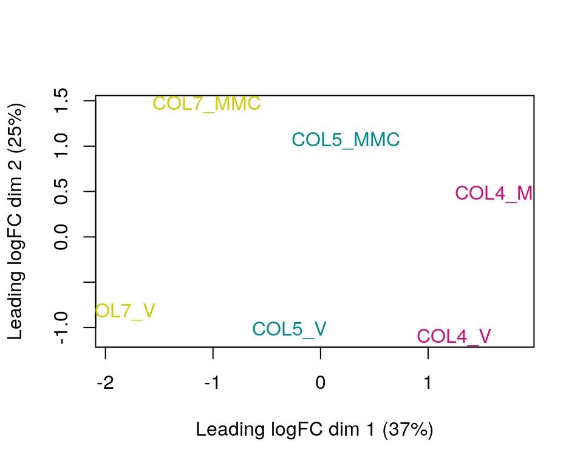
| Version | Author | Date |
|---|---|---|
| 6872c5a | heinin | 2025-11-24 |
#legend('bottomright', col=cols, legend=unique(sample_info), pch = 16, cex = 0.7)
#legend('topright', legend=unique(group_info), pch = shps, cex = 0.7)# Total number of reads per sample
d$samples %>%
rownames_to_column(var = "sample") %>%
ggplot(aes(x = reorder(sample, -lib.size), y = lib.size)) +
geom_bar(stat = "identity") +
theme_classic() +
theme(axis.text.x = element_text(angle = 45, vjust = 1, hjust = 1)) +
theme(plot.margin = unit(c(0,0,0,1), "cm")) +
xlab("Sample") +
ylab("Library size")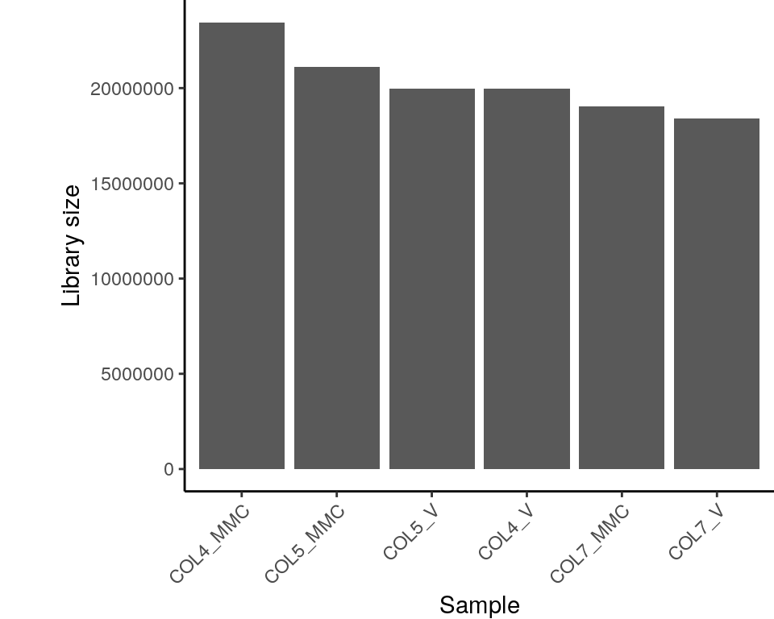
| Version | Author | Date |
|---|---|---|
| 6872c5a | heinin | 2025-11-24 |
DE analysis
#group_info <- sapply(strsplit(metadata_expression$Sample_Treatment, "_"), `[`, 1)
#sample_info <- c("COL4", "COL5", "COL7", "COL4", "COL5", "COL7")
# Voom transformation and calculation of variance weights.
# Specify the model to be fitted. We do this before using voom since voom uses
# variances of the model residuals (observed - fitted).
# Edit to use the relevant metadata column.
groups <- data.frame(sample_info = sample_info, group_info = group_info)
#group_info2 <- c("V", "V", "MMC", "MMC", "V", "V", "MMC", "MMC")
mm <- model.matrix(~0 + sample_info + group_info)
# Renaming columns
#colnames(mm) <- c("MMC", "V")
# Filtering based on the design matrix
# Defaults: min.count = 10, min.total.count = 15, large.n = 10, min.prop = 0.7
keep <- filterByExpr(d, mm)
d1 <- d[keep,]
# Replotting MDS and library sizes
#plotMDS(d1, top = 500, col = cols, pch = shps, cex = 1, labels = colnames(all_counts_df))
#legend('bottomright', col=cols, legend=unique(sample_info), pch = 16, cex = 0.7)
#legend('topright', legend=unique(group_info), pch = shps, cex = 0.7)# Total number of reads per sample
d1$samples %>%
rownames_to_column(var = "sample") %>%
ggplot(aes(x = reorder(sample, -lib.size), y = lib.size)) +
geom_bar(stat = "identity") +
theme_classic() +
theme(axis.text.x = element_text(angle = 45, vjust = 1, hjust = 1)) +
theme(plot.margin = unit(c(0,0,0,1), "cm")) +
xlab("Sample") +
ylab("Library size")# The above specifies a model where each coefficient corresponds to a group mean
# Voom
y1 <- voom(d1, mm, plot = T)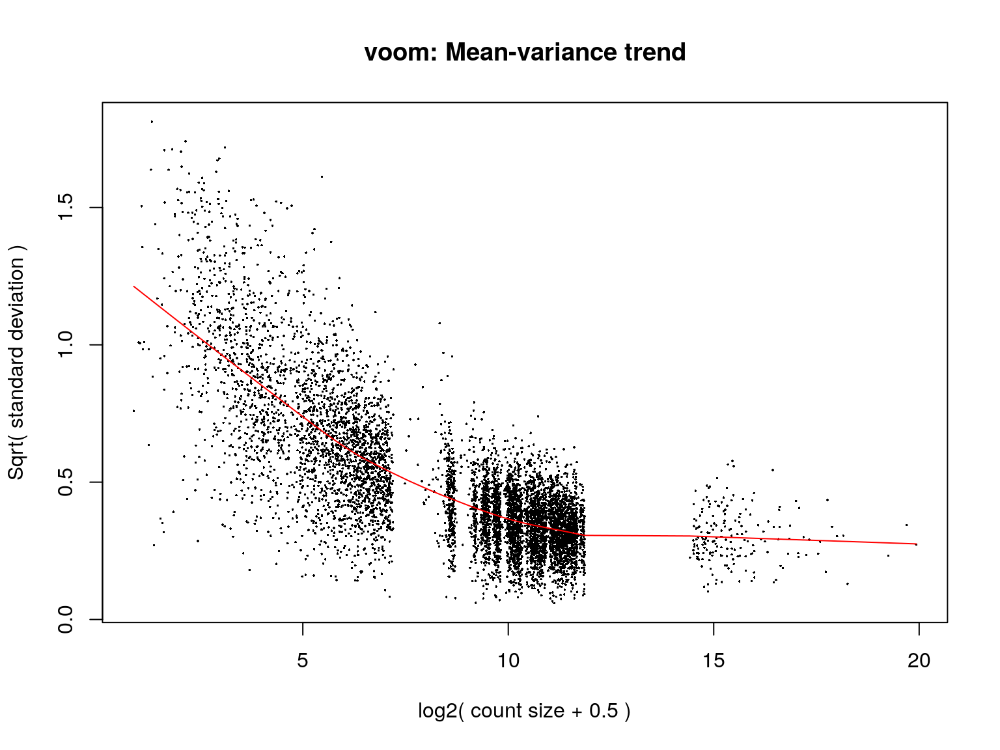
| Version | Author | Date |
|---|---|---|
| 6872c5a | heinin | 2025-11-24 |
# Fitting linear models in limma
# lmFit fits a linear model using weighted least squares for each gene:
fit1 <- lmFit(y1, mm)
head(coef(fit1)) sample_infoCOL4 sample_infoCOL5 sample_infoCOL7 group_infoV
ENSG00000115414 15.69563 15.43894 15.57209 0.037824285
ENSG00000108821 15.07516 15.30641 15.37147 0.218346846
ENSG00000164692 14.52805 15.02653 15.06073 0.072799456
ENSG00000113140 13.91322 13.89857 13.94779 -0.006725222
ENSG00000133110 13.61773 13.88088 13.55633 0.256695834
ENSG00000137801 13.87324 13.77613 12.91705 0.279704991# Specify comparisons
contr1 <- makeContrasts(colnames(coef(fit1)), levels = colnames(coef(fit1)))
contr1 Contrasts
Levels sample_infoCOL4
sample_infoCOL4 0
sample_infoCOL5 0
sample_infoCOL7 0
group_infoV 1tmp <- contrasts.fit(fit1, contr1)
tmp <- eBayes(tmp)
top.table <- topTable(tmp, sort.by = "P", n = Inf)
top.table$gene_name <- mapvalues(x = rownames(top.table),
from = gene_info$gene_id,
to = gene_info$gene_name)
# TODO: flip the direction
top.table$logFC <- -1*top.table$logFC
# Saving all results
write.table(top.table, "/home/hnatri/PIPAC_spatial/human_MMC_V_res.tsv",
sep = "\t", quote = F, row.names = T)
# Plotting
top_sig <- top.table %>%
filter(adj.P.Val < 0.05 & abs(logFC) > 1)
#dplyr::select(gene_name)
p0 <- EnhancedVolcano(top.table,
lab = top.table$gene_name,
x = 'logFC',
y = 'adj.P.Val',
title = "",
subtitle = "",
pCutoff = 0.05,
FCcutoff = 1,
ylim = c(0, max(-log10(top.table[["adj.P.Val"]]), na.rm = TRUE) + 0.5),
caption = "",
titleLabSize = 12,
subtitleLabSize = 2,
legendLabSize = 10,
axisLabSize = 10,
legendIconSize = 3,
labSize = 4)
p0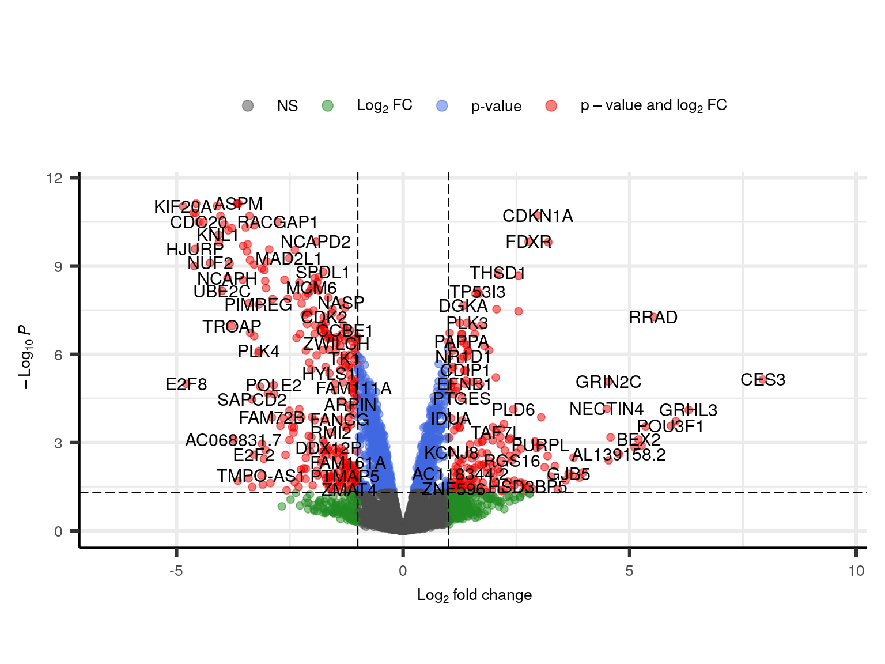
| Version | Author | Date |
|---|---|---|
| 6872c5a | heinin | 2025-11-24 |
FPKM for each gene
# Calculating FPKM for each gene
metadata_expression <- rpkm(d0, gene.length = "gene_length") %>% t() %>% as.data.frame() %>%
rownames_to_column(var = "Sample_Treatment")
metadata_expression$Sample <- sapply(strsplit(metadata_expression$Sample_Treatment, "_"), `[`, 1)
metadata_expression$Treatment <- sapply(strsplit(metadata_expression$Sample_Treatment, "_"), `[`, 2)
gene_info %>% filter(gene_name == "Tenm4")
# Expression by group
p1 <- metadata_expression %>%
ggplot(aes(x = Treatment, y = ENSMUSG00000048078, fill = Treatment)) +
geom_violin(alpha = 0.5) +
geom_point(position = position_jitter(seed = 1, width = 0.2)) +
ylab("expression (FPKM)") +
xlab("Treatment") +
theme_classic() +
theme(legend.position = "none") +
theme(axis.text.x = element_text(angle = 45, vjust = 1, hjust = 1))
p1Plotting marker genes
# Mouse to human gene names
mouse_human_genes <- read.table("http://www.informatics.jax.org/downloads/reports/HOM_MouseHumanSequence.rpt",
sep="\t", header = T)
mouse <- split.data.frame(mouse_human_genes,mouse_human_genes$Common.Organism.Name)[[2]]
human <- split.data.frame(mouse_human_genes,mouse_human_genes$Common.Organism.Name)[[1]]
mouse <- mouse[,c(1,4)]
human <- human[,c(1,4)]
mh_data <- merge.data.frame(mouse, human, by = "DB.Class.Key",all.y = TRUE)
# Markers to plot
mycafs <- c("TGFB1", "ACTA2", "TAGLN", "HOPX", "MYL9")
icafs <- c("IL6", "CXCL12", "CXCL13", "CXCL14")
abcafs <- c("CD74", "HLA-DPB1", "HLA-DPB2", "HLA-DQA1", "HLA-DRA", "HLA-DRB1")
ficafs <- c("SFRP2", "SFRP4", "COMP", "CXCL14", "PLA2G2A", "ASPN")
all_caf_markers <- c(mycafs, icafs, abcafs, ficafs)
top_sig %>% filter(gene_name %in% all_caf_markers) [1] gene_id gene_name gene_chr gene_start
[5] gene_end gene_strand gene_length gene_biotype
[9] gene_description logFC AveExpr t
[13] P.Value adj.P.Val B
<0 rows> (or 0-length row.names)# FPKM, no filtering
# Create DGEList object
d0 <- DGEList(all_counts_df, genes = gene_info)
# Calculate normalization factors
d0 <- calcNormFactors(d0)
d0An object of class "DGEList"
$counts
COL4_V COL5_V COL7_V COL4_MMC COL5_MMC COL7_MMC
ENSG00000115414 1007243 875459 942098 1246953 1010717 941199
ENSG00000108821 713824 978378 892653 843417 853001 852083
ENSG00000164692 454770 702554 655268 560478 728775 682148
ENSG00000113140 287728 297595 286634 357609 340819 315493
ENSG00000133110 298287 340923 256292 274959 348530 246149
23914 more rows ...
$samples
group lib.size norm.factors
COL4_V 1 19959680 0.9453843
COL5_V 1 19966684 0.9826067
COL7_V 1 18390210 0.9819295
COL4_MMC 1 23452779 0.9815971
COL5_MMC 1 21117282 1.0546043
COL7_MMC 1 19024618 1.0590314
$genes
gene_id gene_name gene_chr gene_start gene_end
ENSG00000115414 ENSG00000115414 FN1 2 215360440 215436172
ENSG00000108821 ENSG00000108821 COL1A1 17 50183289 50201632
ENSG00000164692 ENSG00000164692 COL1A2 7 94394561 94431232
ENSG00000113140 ENSG00000113140 SPARC 5 151661096 151687165
ENSG00000133110 ENSG00000133110 POSTN 13 37562583 37598844
gene_strand gene_length gene_biotype
ENSG00000115414 - 17315 protein_coding
ENSG00000108821 - 9819 protein_coding
ENSG00000164692 + 11156 protein_coding
ENSG00000113140 - 4831 protein_coding
ENSG00000133110 - 5464 protein_coding
gene_description
ENSG00000115414 fibronectin 1 [Source:HGNC Symbol;Acc:HGNC:3778]
ENSG00000108821 collagen type I alpha 1 chain [Source:HGNC Symbol;Acc:HGNC:2197]
ENSG00000164692 collagen type I alpha 2 chain [Source:HGNC Symbol;Acc:HGNC:2198]
ENSG00000113140 secreted protein acidic and cysteine rich [Source:HGNC Symbol;Acc:HGNC:11219]
ENSG00000133110 periostin [Source:HGNC Symbol;Acc:HGNC:16953]
23914 more rows ...# Combining expression and metadata
metadata_expression <- rpkm(d0, gene.length = "gene_length") %>% t() %>% as.data.frame() %>%
rownames_to_column(var = "Sample_Treatment")
metadata_expression$Sample <- sapply(strsplit(metadata_expression$Sample_Treatment, "_"), `[`, 1)
metadata_expression$Treatment <- sapply(strsplit(metadata_expression$Sample_Treatment, "_"), `[`, 2)
long_df <- metadata_expression %>%
pivot_longer(cols = grep("ENS", colnames(metadata_expression), value = T),
names_to = "ensembl", values_to = "exp")
# Adding gene names
long_df$gene <- mapvalues(x = long_df$ensembl,
from = gene_info$gene_id,
to = gene_info$gene_name)
long_df$Hh_gene <- mapvalues(x = long_df$gene,
from = mh_data$Symbol.x,
to = mh_data$Symbol.y)
#long_df$Treatment_simple <- ifelse(long_df$Treatment %in% c("V1", "V2"), "V", "MMC")
# Plotting
long_df %>% filter(Hh_gene %in% icafs) %>%
ggplot(aes(x = Treatment, y = exp, color = Treatment, label = Sample)) +
geom_violin(alpha = 0.5) +
geom_point() +
geom_text(hjust=0, vjust=0) +
#geom_line(aes(group = Sample), color = "gray20") +
facet_wrap(~Hh_gene, scales = "free") +
ylab("iCAF expression (FPKM)") +
xlab("") +
theme_classic() +
theme(legend.position = "none") +
theme(axis.text.x = element_text(angle = 45, vjust = 1, hjust = 1))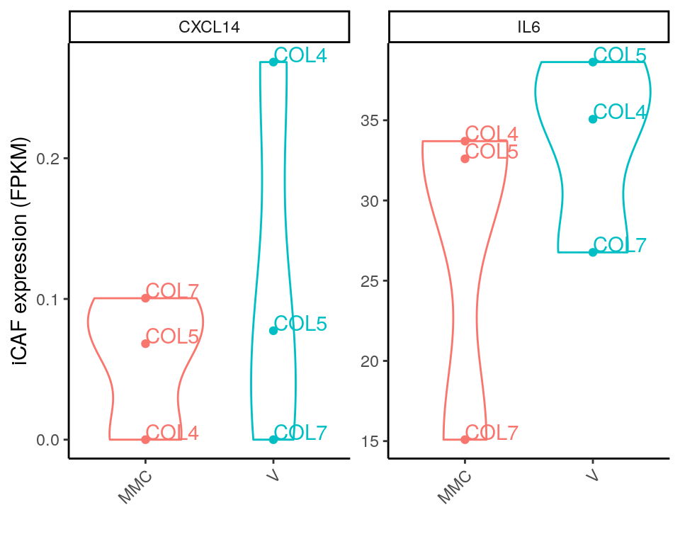
long_df %>% filter(Hh_gene %in% mycafs) %>%
ggplot(aes(x = Treatment, y = exp, color = Treatment, label = Sample)) +
geom_violin(alpha = 0.5) +
geom_point() +
geom_text(hjust=0, vjust=0) +
#geom_line(aes(group = Sample), color = "gray20") +
facet_wrap(~Hh_gene, scales = "free") +
ylab("myCAF expression (FPKM)") +
xlab("") +
theme_classic() +
theme(legend.position = "none") +
theme(axis.text.x = element_text(angle = 45, vjust = 1, hjust = 1))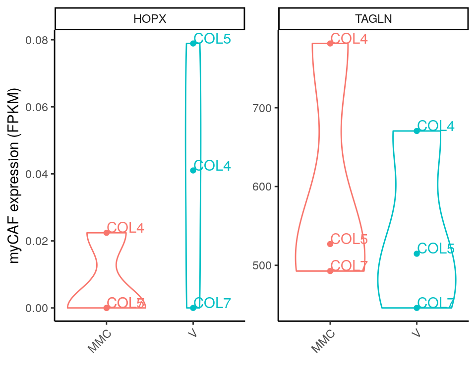
long_df %>% filter(Hh_gene %in% abcafs) %>%
ggplot(aes(x = Treatment, y = exp, color = Treatment, label = Sample)) +
geom_violin(alpha = 0.5) +
geom_point() +
geom_text(hjust=0, vjust=0) +
#geom_line(aes(group = Sample), color = "gray20") +
facet_wrap(~Hh_gene, scales = "free") +
ylab("abCAF expression (FPKM)") +
xlab("") +
theme_classic() +
theme(legend.position = "none") +
theme(axis.text.x = element_text(angle = 45, vjust = 1, hjust = 1))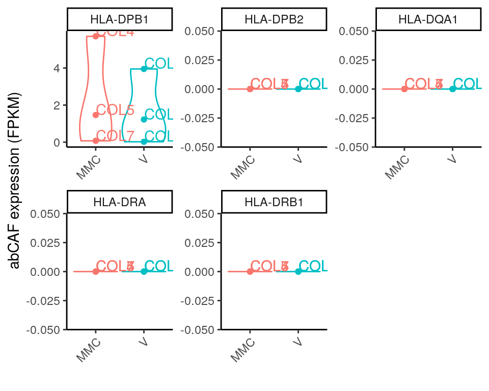
long_df %>% filter(Hh_gene %in% ficafs) %>%
ggplot(aes(x = Treatment, y = exp, color = Treatment, label = Sample)) +
geom_violin(alpha = 0.5) +
geom_point() +
geom_text(hjust=0, vjust=0) +
#geom_line(aes(group = Sample), color = "gray20") +
facet_wrap(~Hh_gene, scales = "free") +
ylab("fiCAF expression (FPKM)") +
xlab("") +
theme_classic() +
theme(legend.position = "none") +
theme(axis.text.x = element_text(angle = 45, vjust = 1, hjust = 1))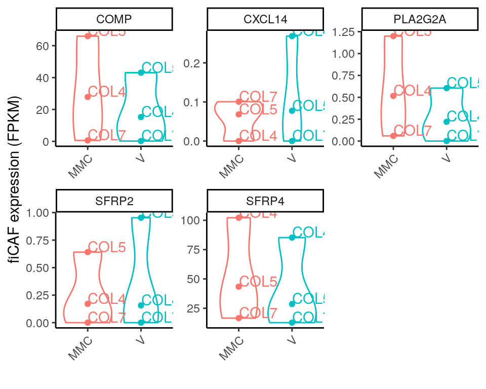
long_df %>% filter(Hh_gene %in% all_caf_markers) %>%
ggplot(aes(x = Treatment, y = exp, color = Treatment, label = Sample)) +
geom_violin(alpha = 0.5) +
geom_point() +
geom_text(hjust=0, vjust=0) +
#geom_line(aes(group = Sample), color = "gray20") +
facet_wrap(~Hh_gene, scales = "free") +
ylab("CAF marker expression (FPKM)") +
xlab("") +
theme_classic() +
theme(legend.position = "none") +
theme(axis.text.x = element_text(angle = 45, vjust = 1, hjust = 1))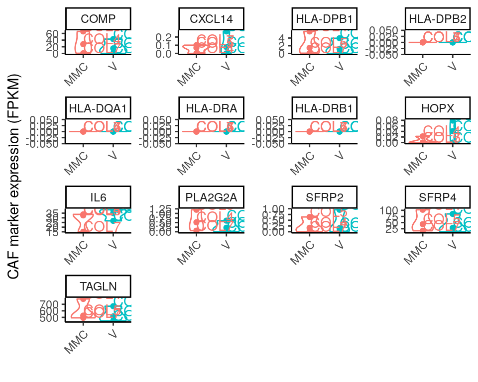
Mouse
Preprocessing
# Excluding ribosomal genes
all_counts_df <- mouse_counts
gene_info <- all_counts_df[,grep("gene", colnames(all_counts_df))]
rownames(all_counts_df) <- all_counts_df$gene_id
all_counts_df <- all_counts_df[,grep("CAF", colnames(all_counts_df))]
ribo <- gene_info[grep("^Rp", gene_info$gene_name),]
all_counts_df <- all_counts_df[!(rownames(all_counts_df) %in% ribo$gene_id), ]
# Arranging gene info to match the count matrix
gene_info <- gene_info %>%
filter(gene_id %in% rownames(all_counts_df)) %>%
dplyr::arrange(factor(gene_id, levels = rownames(all_counts_df)))
identical(gene_info$gene_id, rownames(all_counts_df))[1] TRUE# Calculating gene length
#gene_info$length <- abs(gene_info$stop - gene_info$start)
# Create DGEList object
d0 <- DGEList(all_counts_df, genes = gene_info)
# Calculate normalization factors
d0 <- calcNormFactors(d0)
# Filter low-expressed genes
cutoff <- 1
drop <- which(apply(rpkm(d0, gene.length = "gene_length"), 1, max) < cutoff)
d <- d0[-drop,]
dim(d) # number of genes left[1] 5787 8# Matching sample names with patient metadata
#appendiceal_metadata <- merge(appendiceal_metadata, sample_key, by = "Patient.ID")
#appendiceal_metadata <- appendiceal_metadata %>%
# filter(X2025.HonestBroker.specimen.number %in% colnames(all_counts_df)) %>%
# dplyr::arrange(match(X2025.HonestBroker.specimen.number, colnames(all_counts_df)))
# Dimensionality reduction colored with various metadata
group_info <- sapply(strsplit(colnames(all_counts_df), "_"), `[`, 2)
sample_info <- sapply(strsplit(colnames(all_counts_df), "_"), `[`, 1)
# Set colors and shapes
cols <- c("deeppink3", "cyan4")
shps <- c(15, 16, 17, 18, 15, 16, 17, 18)
#shps <- c(15, 15, 15, 16, 16, 16)
names(cols) <- unique(sample_info)
names(shps) <- unique(group_info)
plotMDS(d, top = 500, col = cols, pch = shps, cex = 1, labels = colnames(all_counts_df))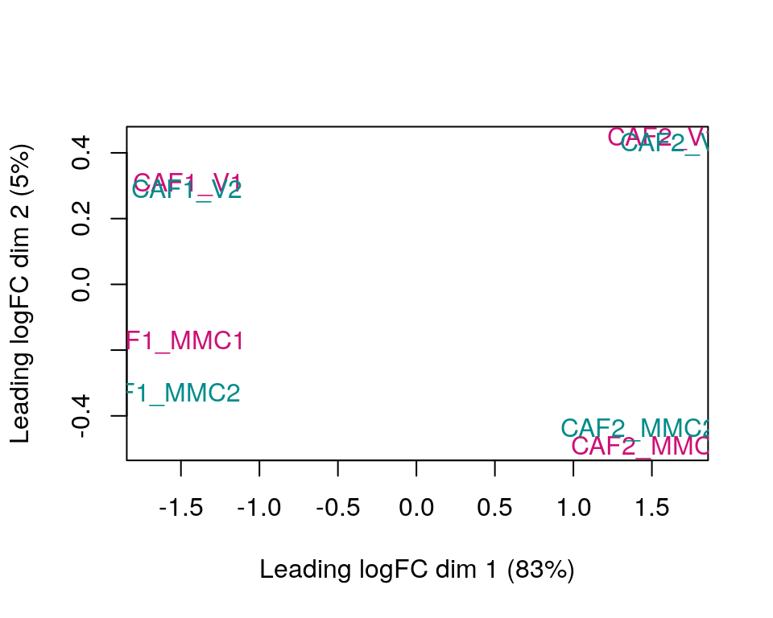
| Version | Author | Date |
|---|---|---|
| 6872c5a | heinin | 2025-11-24 |
#legend('bottomright', col=cols, legend=unique(sample_info), pch = 16, cex = 0.7)
#legend('topright', legend=unique(group_info), pch = shps, cex = 0.7)# Total number of reads per sample
d$samples %>%
rownames_to_column(var = "sample") %>%
ggplot(aes(x = reorder(sample, -lib.size), y = lib.size)) +
geom_bar(stat = "identity") +
theme_classic() +
theme(axis.text.x = element_text(angle = 45, vjust = 1, hjust = 1)) +
theme(plot.margin = unit(c(0,0,0,1), "cm")) +
xlab("Sample") +
ylab("Library size")
| Version | Author | Date |
|---|---|---|
| 6872c5a | heinin | 2025-11-24 |
DE analysis
#group_info <- sapply(strsplit(metadata_expression$Sample_Treatment, "_"), `[`, 1)
#sample_info <- c("COL4", "COL5", "COL7", "COL4", "COL5", "COL7")
# Voom transformation and calculation of variance weights.
# Specify the model to be fitted. We do this before using voom since voom uses
# variances of the model residuals (observed - fitted).
# Edit to use the relevant metadata column.
groups <- data.frame(sample_info = sample_info, group_info = group_info)
#group_info2 <- c("V", "V", "MMC", "MMC", "V", "V", "MMC", "MMC")
mm <- model.matrix(~0 + sample_info + group_info)
# Renaming columns
#colnames(mm) <- c("MMC", "V")
# Filtering based on the design matrix
# Defaults: min.count = 10, min.total.count = 15, large.n = 10, min.prop = 0.7
keep <- filterByExpr(d, mm)
d1 <- d[keep,]
# Replotting MDS and library sizes
#plotMDS(d1, top = 500, col = cols, pch = shps, cex = 1, labels = colnames(all_counts_df))
#legend('bottomright', col=cols, legend=unique(sample_info), pch = 16, cex = 0.7)
#legend('topright', legend=unique(group_info), pch = shps, cex = 0.7)# Total number of reads per sample
d1$samples %>%
rownames_to_column(var = "sample") %>%
ggplot(aes(x = reorder(sample, -lib.size), y = lib.size)) +
geom_bar(stat = "identity") +
theme_classic() +
theme(axis.text.x = element_text(angle = 45, vjust = 1, hjust = 1)) +
theme(plot.margin = unit(c(0,0,0,1), "cm")) +
xlab("Sample") +
ylab("Library size")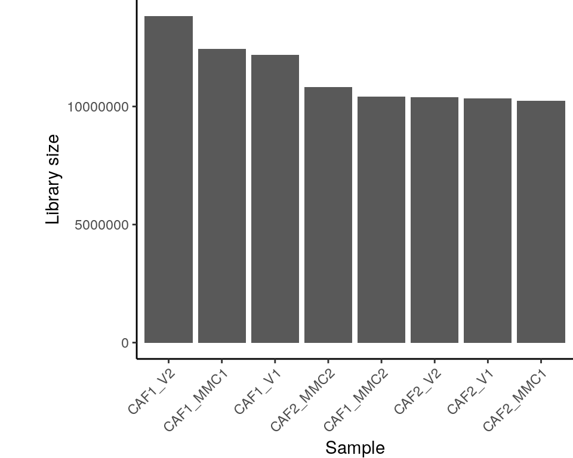
| Version | Author | Date |
|---|---|---|
| 6872c5a | heinin | 2025-11-24 |
# The above specifies a model where each coefficient corresponds to a group mean
# Voom
y1 <- voom(d1, mm, plot = T)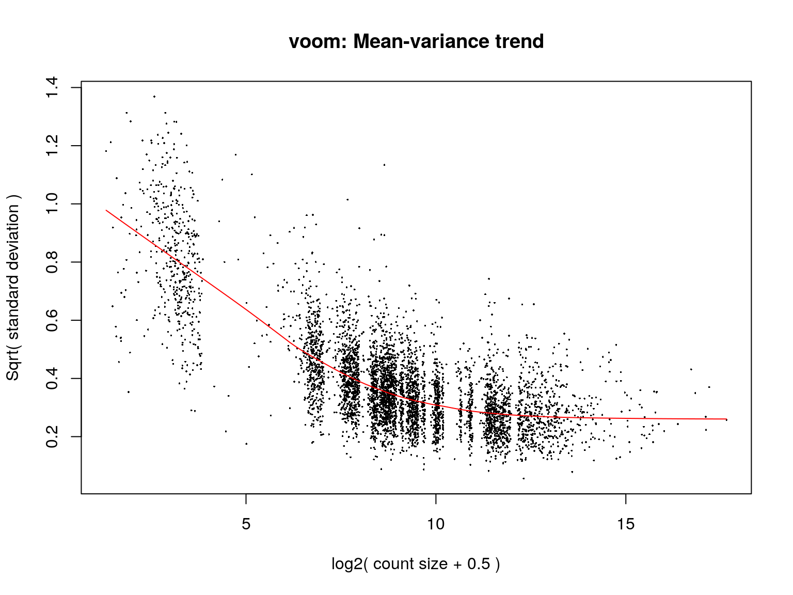
| Version | Author | Date |
|---|---|---|
| 6872c5a | heinin | 2025-11-24 |
# Fitting linear models in limma
# lmFit fits a linear model using weighted least squares for each gene:
fit1 <- lmFit(y1, mm)
head(coef(fit1)) sample_infoCAF1 sample_infoCAF2 group_infoMMC2 group_infoV1
ENSMUSG00000026193 14.55596 13.49168 -0.013386837 0.2678738
ENSMUSG00000040152 14.68862 12.14376 0.041897683 0.3847080
ENSMUSG00000001506 13.88551 13.16751 -0.066494772 0.3597286
ENSMUSG00000029661 13.53204 13.25772 -0.025779061 0.4475282
ENSMUSG00000037742 13.24935 13.28372 0.002962901 0.1110102
ENSMUSG00000119584 13.82740 12.97272 -0.383403805 -0.1085237
group_infoV2
ENSMUSG00000026193 0.2791414
ENSMUSG00000040152 0.3755523
ENSMUSG00000001506 0.4096242
ENSMUSG00000029661 0.4419613
ENSMUSG00000037742 0.1531156
ENSMUSG00000119584 -0.2013886# Specify comparisons
contr1 <- makeContrasts(colnames(coef(fit1)), levels = colnames(coef(fit1)))
contr1 Contrasts
Levels sample_infoCAF1
sample_infoCAF1 0
sample_infoCAF2 0
group_infoMMC2 0
group_infoV1 0
group_infoV2 1tmp <- contrasts.fit(fit1, contr1)
tmp <- eBayes(tmp)
top.table.mouse <- topTable(tmp, sort.by = "P", n = Inf)
top.table.mouse$gene_name <- mapvalues(x = rownames(top.table.mouse),
from = gene_info$gene_id,
to = gene_info$gene_name)
# Saving all results
write.table(top.table.mouse, "/home/hnatri/PIPAC_spatial/mouse_MMC_V_res.tsv",
sep = "\t", quote = F, row.names = T)
top.table.mouse$human_gene_name <- mapvalues(top.table.mouse$gene_name,
from = mh_data$Symbol.x,
to = mh_data$Symbol.y)
# TODO: change direction
top.table.mouse$logFC <- -1*(top.table.mouse$logFC)
# Plotting
top_sig_mouse <- top.table.mouse %>%
filter(adj.P.Val < 0.05 & abs(logFC) > 1)
#dplyr::select(gene_name)
#mouse_human_genes <- read.table("http://www.informatics.jax.org/downloads/reports/HOM_MouseHumanSequence.rpt",
# sep="\t", header = T)
#
#mouse <- split.data.frame(mouse_human_genes,mouse_human_genes$Common.Organism.Name)[[2]]
#human <- split.data.frame(mouse_human_genes,mouse_human_genes$Common.Organism.Name)[[1]]
#mouse <- mouse[,c(1,4)]
#human <- human[,c(1,4)]
#mh_data <- merge.data.frame(mouse, human, by = "DB.Class.Key",all.y = TRUE)
p0 <- EnhancedVolcano(top.table.mouse,
lab = top.table.mouse$gene_name,
x = 'logFC',
y = 'adj.P.Val',
title = "",
subtitle = "",
pCutoff = 0.05,
FCcutoff = 1,
ylim = c(0, max(-log10(top.table.mouse[["adj.P.Val"]]), na.rm = TRUE) + 0.5),
caption = "",
titleLabSize = 12,
subtitleLabSize = 2,
legendLabSize = 10,
axisLabSize = 10,
legendIconSize = 3,
labSize = 4)
p0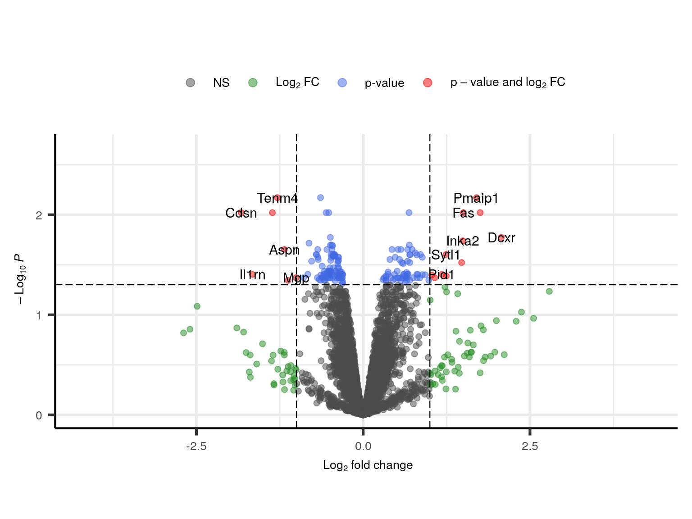
| Version | Author | Date |
|---|---|---|
| 6872c5a | heinin | 2025-11-24 |
Pathway enrichment, GO
Human
# Subsetting genes
gse_input <- top.table %>%
filter(adj.P.Val < 0.1)
#gse <- enrichGO(gse_input$gene_id,
# ont ="BP",
# keyType = "ENSEMBL",
# minGSSize = 3,
# maxGSSize = 800,
# pvalueCutoff = 0.05,
# universe = top.table$gene_id,
# OrgDb = org.Hs.eg.db,
# pAdjustMethod = "BH")
#
#dotplot(gse, showCategory=30, font.size=10, color="qvalue") +
# theme(legend.text=element_text(size=5),
# legend.position = "top",
# legend.box = "vertical",
# text = element_text(size=6))
#
#dim(gse)
#gse_input_005 <- top.table %>%
# filter(adj.P.Val < 0.05)
#
#gse_005 <- enrichGO(gse_input_005$gene_id,
# ont ="BP",
# keyType = "ENSEMBL",
# minGSSize = 3,
# maxGSSize = 800,
# pvalueCutoff = 0.05,
# universe = top.table$gene_id,
# OrgDb = org.Hs.eg.db,
# pAdjustMethod = "BH")
#
#dotplot(gse_005, showCategory=30, font.size=10, color="qvalue") +
# theme(legend.text=element_text(size=5),
# legend.position = "top",
# legend.box = "vertical",
# text = element_text(size=6))
#
#dim(gse_005)Upregulated genes
# Subsetting genes
gse_input <- top.table %>%
filter(adj.P.Val < 0.1 & logFC > 0)
gse <- enrichGO(gse_input$gene_id,
ont ="BP",
keyType = "ENSEMBL",
minGSSize = 3,
maxGSSize = 800,
pvalueCutoff = 0.05,
universe = top.table$gene_id,
OrgDb = org.Hs.eg.db,
pAdjustMethod = "BH")
dotplot(gse, showCategory=30, font.size=10, color="qvalue") +
theme(legend.text=element_text(size=5),
legend.position = "top",
legend.box = "vertical",
text = element_text(size=6))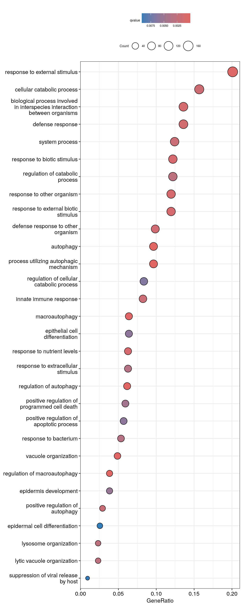
dim(gse)[1] 89 9Downregulated genes
# Subsetting genes
gse_input <- top.table %>%
filter(adj.P.Val < 0.1 & logFC < 0)
gse <- enrichGO(gse_input$gene_id,
ont ="BP",
keyType = "ENSEMBL",
minGSSize = 3,
maxGSSize = 800,
pvalueCutoff = 0.05,
universe = top.table$gene_id,
OrgDb = org.Hs.eg.db,
pAdjustMethod = "BH")
dotplot(gse, showCategory=30, font.size=10, color="qvalue") +
theme(legend.text=element_text(size=5),
legend.position = "top",
legend.box = "vertical",
text = element_text(size=6))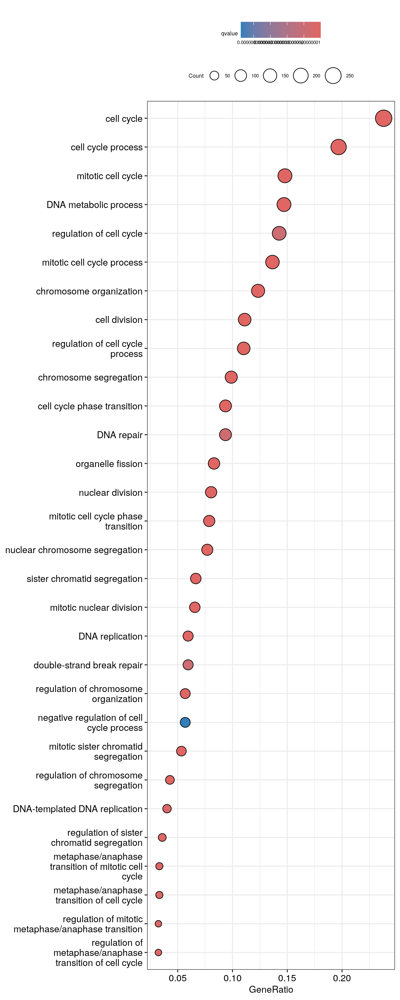
| Version | Author | Date |
|---|---|---|
| cab1750 | heinin | 2026-02-11 |
dim(gse)[1] 213 9Mouse
# Selecting genes
gse_input <- top.table.mouse %>%
filter(adj.P.Val < 0.1)
gse_mouse <- enrichGO(gse_input$gene_id,
ont ="BP",
keyType = "ENSEMBL",
minGSSize = 3,
maxGSSize = 800,
pvalueCutoff = 0.05,
universe = top.table.mouse$gene_id,
OrgDb = org.Mm.eg.db,
pAdjustMethod = "BH")
dotplot(gse_mouse, showCategory=30, font.size=10, color="qvalue") +
theme(legend.text=element_text(size=5),
legend.position = "top",
legend.box = "vertical",
text = element_text(size=6))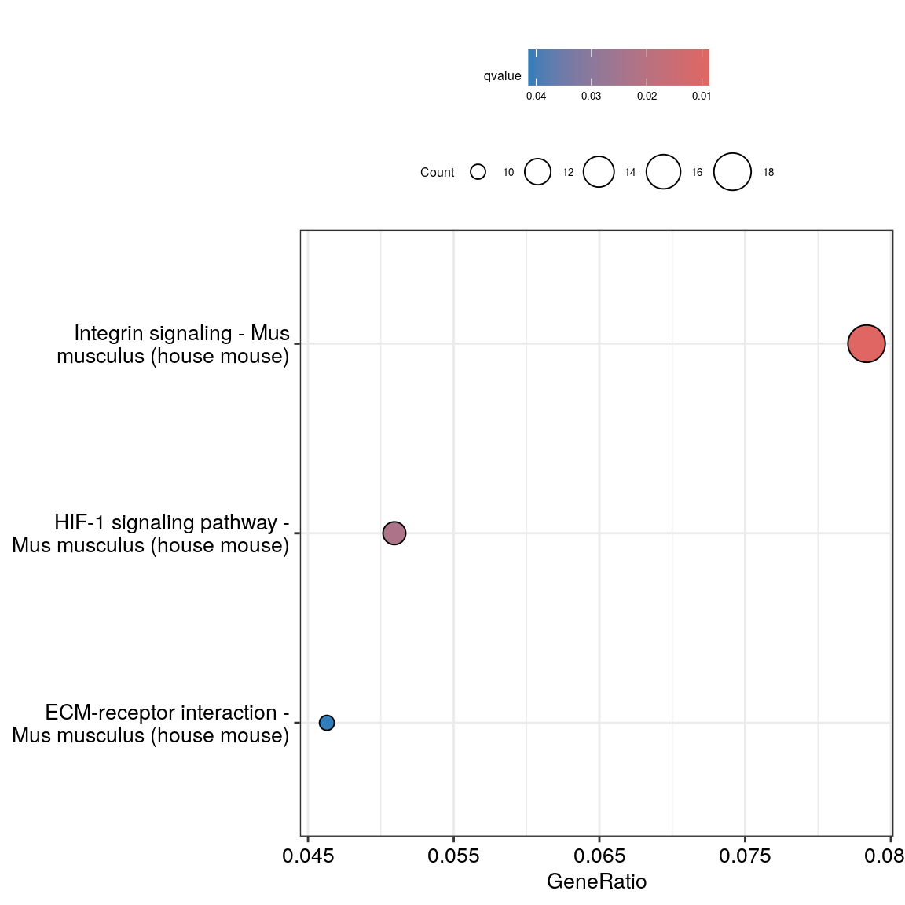
| Version | Author | Date |
|---|---|---|
| cab1750 | heinin | 2026-02-11 |
dim(gse_mouse)[1] 109 9#gse_input_005 <- top.table.mouse %>%
# filter(adj.P.Val < 0.05)
#
#gse_mouse_005 <- enrichGO(gse_input_005$gene_id,
# ont ="BP",
# keyType = "ENSEMBL",
# minGSSize = 3,
# maxGSSize = 800,
# pvalueCutoff = 0.05,
# universe = top.table.mouse$gene_id,
# OrgDb = org.Mm.eg.db,
# pAdjustMethod = "BH")
#
#dotplot(gse_mouse_005, showCategory=30, font.size=10, color="qvalue") +
# theme(legend.text=element_text(size=5),
# legend.position = "top",
# legend.box = "vertical",
# text = element_text(size=6))
#
#dim(gse_mouse_005)Shared pathways between mouse and human
intersect(gse_mouse$Description, gse$Description)character(0)Pathways unique to mouse or human
setdiff(gse_mouse$Description, gse$Description) [1] "regulation of apoptotic process"
[2] "apoptotic process"
[3] "regulation of programmed cell death"
[4] "cell death"
[5] "programmed cell death"
[6] "response to external stimulus"
[7] "negative regulation of developmental process"
[8] "connective tissue development"
[9] "tissue development"
[10] "response to organic substance"
[11] "negative regulation of multicellular organismal process"
[12] "cartilage development"
[13] "response to endogenous stimulus"
[14] "circulatory system development"
[15] "regulation of developmental process"
[16] "monosaccharide catabolic process"
[17] "response to cytokine"
[18] "cellular response to cytokine stimulus"
[19] "regulation of peptidase activity"
[20] "response to lipid"
[21] "cellular response to chemical stimulus"
[22] "regulation of cysteine-type endopeptidase activity involved in apoptotic process"
[23] "regulation of endopeptidase activity"
[24] "tube morphogenesis"
[25] "osteoblast differentiation"
[26] "cellular response to organic substance"
[27] "vasculature development"
[28] "positive regulation of cell population proliferation"
[29] "positive regulation of programmed cell death"
[30] "tube development"
[31] "regulation of cysteine-type endopeptidase activity"
[32] "hexose catabolic process"
[33] "regulation of multicellular organismal development"
[34] "regulation of cell differentiation"
[35] "cell migration"
[36] "angiogenesis"
[37] "cellular response to endogenous stimulus"
[38] "response to growth factor"
[39] "cell-substrate adhesion"
[40] "negative regulation of cell differentiation"
[41] "regulation of cell population proliferation"
[42] "negative regulation of cell development"
[43] "cell surface receptor signaling pathway"
[44] "system process"
[45] "positive regulation of apoptotic process"
[46] "ossification"
[47] "cellular response to interleukin-1"
[48] "cell adhesion"
[49] "chaperone cofactor-dependent protein refolding"
[50] "cell motility"
[51] "monosaccharide metabolic process"
[52] "cellular response to growth factor stimulus"
[53] "blood vessel development"
[54] "negative regulation of peptidase activity"
[55] "epithelial cell differentiation"
[56] "negative regulation of apoptotic process"
[57] "negative regulation of programmed cell death"
[58] "negative regulation of cell communication"
[59] "negative regulation of signaling"
[60] "glycolytic process through glucose-6-phosphate"
[61] "collagen biosynthetic process"
[62] "anatomical structure formation involved in morphogenesis"
[63] "blood vessel morphogenesis"
[64] "response to hormone"
[65] "cell-matrix adhesion"
[66] "hexose metabolic process"
[67] "negative regulation of signal transduction"
[68] "chemotaxis"
[69] "taxis"
[70] "response to type II interferon"
[71] "positive regulation of cysteine-type endopeptidase activity involved in apoptotic process"
[72] "response to interleukin-1"
[73] "response to lipopolysaccharide"
[74] "glucose catabolic process"
[75] "glycolytic process through fructose-6-phosphate"
[76] "regulation of bone development"
[77] "response to oxygen-containing compound"
[78] "collagen fibril organization"
[79] "regulation of protein metabolic process"
[80] "positive regulation of multicellular organismal process"
[81] "NADH regeneration"
[82] "canonical glycolysis"
[83] "glucose catabolic process to pyruvate"
[84] "carbohydrate metabolic process"
[85] "cellular response to type II interferon"
[86] "'de novo' protein folding"
[87] "'de novo' post-translational protein folding"
[88] "regulation of cellular response to growth factor stimulus"
[89] "negative regulation of immune system process"
[90] "bone mineralization"
[91] "positive regulation of cysteine-type endopeptidase activity"
[92] "cartilage development involved in endochondral bone morphogenesis"
[93] "DNA modification"
[94] "positive regulation of reactive oxygen species metabolic process"
[95] "positive regulation of phosphorus metabolic process"
[96] "positive regulation of phosphate metabolic process"
[97] "negative regulation of response to stimulus"
[98] "small molecule biosynthetic process"
[99] "negative regulation of endopeptidase activity"
[100] "positive regulation of cell differentiation"
[101] "regulation of hydrolase activity"
[102] "locomotion"
[103] "lymph vessel development"
[104] "retina vasculature development in camera-type eye"
[105] "gonad development"
[106] "development of primary sexual characteristics"
[107] "heart development"
[108] "regulation of cartilage development"
[109] "regulation of angiogenesis" setdiff(gse$Description, gse_mouse$Description) [1] "cell cycle process"
[2] "chromosome segregation"
[3] "chromosome organization"
[4] "cell cycle"
[5] "mitotic cell cycle process"
[6] "mitotic cell cycle"
[7] "nuclear chromosome segregation"
[8] "sister chromatid segregation"
[9] "cell division"
[10] "nuclear division"
[11] "mitotic sister chromatid segregation"
[12] "mitotic nuclear division"
[13] "organelle fission"
[14] "DNA metabolic process"
[15] "regulation of chromosome segregation"
[16] "cell cycle phase transition"
[17] "DNA replication"
[18] "regulation of cell cycle process"
[19] "mitotic cell cycle phase transition"
[20] "regulation of sister chromatid segregation"
[21] "regulation of chromosome organization"
[22] "DNA-templated DNA replication"
[23] "metaphase/anaphase transition of mitotic cell cycle"
[24] "metaphase/anaphase transition of cell cycle"
[25] "regulation of mitotic metaphase/anaphase transition"
[26] "regulation of metaphase/anaphase transition of cell cycle"
[27] "DNA repair"
[28] "double-strand break repair"
[29] "regulation of cell cycle"
[30] "negative regulation of cell cycle process"
[31] "recombinational repair"
[32] "double-strand break repair via homologous recombination"
[33] "regulation of chromosome separation"
[34] "chromosome separation"
[35] "regulation of cell cycle phase transition"
[36] "cell cycle checkpoint signaling"
[37] "meiotic cell cycle"
[38] "DNA recombination"
[39] "regulation of mitotic sister chromatid separation"
[40] "mitotic sister chromatid separation"
[41] "negative regulation of cell cycle phase transition"
[42] "regulation of mitotic cell cycle"
[43] "spindle organization"
[44] "microtubule cytoskeleton organization involved in mitosis"
[45] "regulation of mitotic cell cycle phase transition"
[46] "microtubule cytoskeleton organization"
[47] "DNA damage response"
[48] "negative regulation of sister chromatid segregation"
[49] "negative regulation of mitotic sister chromatid segregation"
[50] "negative regulation of mitotic metaphase/anaphase transition"
[51] "negative regulation of chromosome segregation"
[52] "negative regulation of metaphase/anaphase transition of cell cycle"
[53] "negative regulation of chromosome separation"
[54] "negative regulation of mitotic sister chromatid separation"
[55] "negative regulation of cell cycle"
[56] "attachment of spindle microtubules to kinetochore"
[57] "regulation of mitotic sister chromatid segregation"
[58] "mitotic spindle assembly checkpoint signaling"
[59] "spindle checkpoint signaling"
[60] "spindle assembly checkpoint signaling"
[61] "mitotic spindle checkpoint signaling"
[62] "mitotic spindle organization"
[63] "negative regulation of nuclear division"
[64] "positive regulation of cell cycle process"
[65] "negative regulation of mitotic cell cycle phase transition"
[66] "regulation of DNA metabolic process"
[67] "negative regulation of mitotic nuclear division"
[68] "mitotic cell cycle checkpoint signaling"
[69] "sexual reproduction"
[70] "negative regulation of mitotic cell cycle"
[71] "regulation of mitotic nuclear division"
[72] "non-membrane-bounded organelle assembly"
[73] "chromosome localization"
[74] "meiotic cell cycle process"
[75] "reproductive process"
[76] "DNA replication initiation"
[77] "reproduction"
[78] "regulation of DNA-templated DNA replication"
[79] "negative regulation of chromosome organization"
[80] "regulation of DNA replication"
[81] "regulation of nuclear division"
[82] "spindle assembly"
[83] "chromatin organization"
[84] "protein-DNA complex organization"
[85] "metaphase chromosome alignment"
[86] "establishment of chromosome localization"
[87] "microtubule-based process"
[88] "positive regulation of cell cycle"
[89] "positive regulation of DNA metabolic process"
[90] "regulation of cell cycle checkpoint"
[91] "microtubule organizing center organization"
[92] "meiotic nuclear division"
[93] "meiosis I cell cycle process"
[94] "cellular response to stress"
[95] "meiotic chromosome segregation"
[96] "centrosome cycle"
[97] "regulation of DNA-templated DNA replication initiation"
[98] "regulation of spindle checkpoint"
[99] "regulation of mitotic cell cycle spindle assembly checkpoint"
[100] "regulation of mitotic spindle checkpoint"
[101] "cell cycle DNA replication"
[102] "nuclear DNA replication"
[103] "positive regulation of chromosome segregation"
[104] "RNA localization"
[105] "sister chromatid cohesion"
[106] "positive regulation of double-strand break repair"
[107] "DNA-templated DNA replication maintenance of fidelity"
[108] "centriole assembly"
[109] "DNA integrity checkpoint signaling"
[110] "DNA conformation change"
[111] "meiosis I"
[112] "positive regulation of DNA repair"
[113] "DNA geometric change"
[114] "G1/S transition of mitotic cell cycle"
[115] "nuclear pore organization"
[116] "DNA duplex unwinding"
[117] "regulation of attachment of spindle microtubules to kinetochore"
[118] "positive regulation of chromosome separation"
[119] "mitotic spindle assembly"
[120] "chromatin remodeling"
[121] "cytoskeleton organization"
[122] "centriole replication"
[123] "regulation of double-strand break repair"
[124] "chromosome condensation"
[125] "double-strand break repair via break-induced replication"
[126] "DNA strand elongation involved in DNA replication"
[127] "positive regulation of spindle checkpoint"
[128] "positive regulation of mitotic cell cycle spindle assembly checkpoint"
[129] "centromere complex assembly"
[130] "G2/M transition of mitotic cell cycle"
[131] "attachment of mitotic spindle microtubules to kinetochore"
[132] "mitotic DNA replication"
[133] "DNA unwinding involved in DNA replication"
[134] "mitotic recombination"
[135] "folic acid-containing compound metabolic process"
[136] "centrosome duplication"
[137] "spindle localization"
[138] "negative regulation of gene expression, epigenetic"
[139] "multicellular organismal reproductive process"
[140] "cell cycle G1/S phase transition"
[141] "mRNA transport"
[142] "regulation of organelle organization"
[143] "nucleic acid transport"
[144] "RNA transport"
[145] "regulation of DNA repair"
[146] "heterochromatin formation"
[147] "positive regulation of chromosome organization"
[148] "establishment of RNA localization"
[149] "regulation of double-strand break repair via homologous recombination"
[150] "multicellular organism reproduction"
[151] "DNA damage checkpoint signaling"
[152] "cell cycle G2/M phase transition"
[153] "RNA splicing, via transesterification reactions with bulged adenosine as nucleophile"
[154] "mRNA splicing, via spliceosome"
[155] "mitotic metaphase chromosome alignment"
[156] "mitotic chromosome condensation"
[157] "positive regulation of cell cycle checkpoint"
[158] "tetrahydrofolate metabolic process"
[159] "DNA strand elongation"
[160] "homologous recombination"
[161] "RNA splicing"
[162] "RNA splicing, via transesterification reactions"
[163] "DNA biosynthetic process"
[164] "regulation of DNA recombination"
[165] "positive regulation of mitotic cell cycle phase transition"
[166] "heterochromatin organization"
[167] "gamete generation"
[168] "establishment of spindle localization"
[169] "mitotic sister chromatid cohesion"
[170] "replication fork processing"
[171] "regulation of nucleotide-excision repair"
[172] "regulation of G2/M transition of mitotic cell cycle"
[173] "chromatin remodeling at centromere"
[174] "CENP-A containing chromatin assembly"
[175] "regulation of chromosome condensation"
[176] "odontoblast differentiation"
[177] "neutrophil homeostasis"
[178] "primary miRNA processing"
[179] "regulation of centriole replication"
[180] "regulatory ncRNA-mediated gene silencing"
[181] "nuclear pore complex assembly"
[182] "positive regulation of mitotic sister chromatid separation"
[183] "cellular process involved in reproduction in multicellular organism"
[184] "pteridine-containing compound metabolic process"
[185] "positive regulation of mitotic cell cycle"
[186] "positive regulation of cell cycle phase transition"
[187] "nucleobase-containing compound transport"
[188] "regulatory ncRNA processing"
[189] "epigenetic regulation of gene expression"
[190] "base-excision repair"
[191] "homologous chromosome segregation"
[192] "chromosome organization involved in meiotic cell cycle"
[193] "protein-containing complex assembly"
[194] "stem cell population maintenance"
[195] "signal transduction in response to DNA damage"
[196] "maintenance of cell number"
[197] "positive regulation of developmental process"
[198] "nucleocytoplasmic transport"
[199] "nuclear transport"
[200] "protein-DNA complex assembly"
[201] "deoxyribonucleotide metabolic process"
[202] "2'-deoxyribonucleotide metabolic process"
[203] "deoxyribose phosphate metabolic process"
[204] "nucleus organization"
[205] "nervous system development"
[206] "mRNA processing"
[207] "regulation of cell cycle G2/M phase transition"
[208] "regulation of mRNA metabolic process"
[209] "negative regulation of organelle organization"
[210] "regulation of mRNA splicing, via spliceosome"
[211] "cellular senescence"
[212] "negative regulation of DNA recombination"
[213] "male gamete generation" Overlap with a more stringent significance threshold
gse_mouse_001 <- gse_mouse %>%
filter(qvalue < 0.01)
gse_001 <- gse %>%
filter(qvalue < 0.01)
intersect(gse_mouse_001$Description, gse_001$Description)character(0)setdiff(gse_mouse_001$Description, gse_001$Description) [1] "regulation of apoptotic process"
[2] "apoptotic process"
[3] "regulation of programmed cell death"
[4] "cell death"
[5] "programmed cell death"
[6] "response to external stimulus"
[7] "negative regulation of developmental process"
[8] "connective tissue development"
[9] "tissue development"
[10] "response to organic substance"
[11] "negative regulation of multicellular organismal process"
[12] "cartilage development"
[13] "response to endogenous stimulus"
[14] "circulatory system development"
[15] "regulation of developmental process"
[16] "monosaccharide catabolic process"
[17] "response to cytokine"
[18] "cellular response to cytokine stimulus"
[19] "regulation of peptidase activity"
[20] "response to lipid"
[21] "cellular response to chemical stimulus"
[22] "regulation of cysteine-type endopeptidase activity involved in apoptotic process"
[23] "regulation of endopeptidase activity"
[24] "tube morphogenesis"
[25] "osteoblast differentiation"
[26] "cellular response to organic substance"
[27] "vasculature development"
[28] "positive regulation of cell population proliferation"
[29] "positive regulation of programmed cell death"
[30] "tube development"
[31] "regulation of cysteine-type endopeptidase activity"
[32] "hexose catabolic process"
[33] "regulation of multicellular organismal development"
[34] "regulation of cell differentiation"
[35] "cell migration"
[36] "angiogenesis"
[37] "cellular response to endogenous stimulus"
[38] "response to growth factor"
[39] "cell-substrate adhesion" setdiff(gse_001$Description, gse_mouse_001$Description) [1] "cell cycle process"
[2] "chromosome segregation"
[3] "chromosome organization"
[4] "cell cycle"
[5] "mitotic cell cycle process"
[6] "mitotic cell cycle"
[7] "nuclear chromosome segregation"
[8] "sister chromatid segregation"
[9] "cell division"
[10] "nuclear division"
[11] "mitotic sister chromatid segregation"
[12] "mitotic nuclear division"
[13] "organelle fission"
[14] "DNA metabolic process"
[15] "regulation of chromosome segregation"
[16] "cell cycle phase transition"
[17] "DNA replication"
[18] "regulation of cell cycle process"
[19] "mitotic cell cycle phase transition"
[20] "regulation of sister chromatid segregation"
[21] "regulation of chromosome organization"
[22] "DNA-templated DNA replication"
[23] "metaphase/anaphase transition of mitotic cell cycle"
[24] "metaphase/anaphase transition of cell cycle"
[25] "regulation of mitotic metaphase/anaphase transition"
[26] "regulation of metaphase/anaphase transition of cell cycle"
[27] "DNA repair"
[28] "double-strand break repair"
[29] "regulation of cell cycle"
[30] "negative regulation of cell cycle process"
[31] "recombinational repair"
[32] "double-strand break repair via homologous recombination"
[33] "regulation of chromosome separation"
[34] "chromosome separation"
[35] "regulation of cell cycle phase transition"
[36] "cell cycle checkpoint signaling"
[37] "meiotic cell cycle"
[38] "DNA recombination"
[39] "regulation of mitotic sister chromatid separation"
[40] "mitotic sister chromatid separation"
[41] "negative regulation of cell cycle phase transition"
[42] "regulation of mitotic cell cycle"
[43] "spindle organization"
[44] "microtubule cytoskeleton organization involved in mitosis"
[45] "regulation of mitotic cell cycle phase transition"
[46] "microtubule cytoskeleton organization"
[47] "DNA damage response"
[48] "negative regulation of sister chromatid segregation"
[49] "negative regulation of mitotic sister chromatid segregation"
[50] "negative regulation of mitotic metaphase/anaphase transition"
[51] "negative regulation of chromosome segregation"
[52] "negative regulation of metaphase/anaphase transition of cell cycle"
[53] "negative regulation of chromosome separation"
[54] "negative regulation of mitotic sister chromatid separation"
[55] "negative regulation of cell cycle"
[56] "attachment of spindle microtubules to kinetochore"
[57] "regulation of mitotic sister chromatid segregation"
[58] "mitotic spindle assembly checkpoint signaling"
[59] "spindle checkpoint signaling"
[60] "spindle assembly checkpoint signaling"
[61] "mitotic spindle checkpoint signaling"
[62] "mitotic spindle organization"
[63] "negative regulation of nuclear division"
[64] "positive regulation of cell cycle process"
[65] "negative regulation of mitotic cell cycle phase transition"
[66] "regulation of DNA metabolic process"
[67] "negative regulation of mitotic nuclear division"
[68] "mitotic cell cycle checkpoint signaling"
[69] "sexual reproduction"
[70] "negative regulation of mitotic cell cycle"
[71] "regulation of mitotic nuclear division"
[72] "non-membrane-bounded organelle assembly"
[73] "chromosome localization"
[74] "meiotic cell cycle process"
[75] "reproductive process"
[76] "DNA replication initiation"
[77] "reproduction"
[78] "regulation of DNA-templated DNA replication"
[79] "negative regulation of chromosome organization"
[80] "regulation of DNA replication"
[81] "regulation of nuclear division"
[82] "spindle assembly"
[83] "chromatin organization"
[84] "protein-DNA complex organization"
[85] "metaphase chromosome alignment"
[86] "establishment of chromosome localization"
[87] "microtubule-based process"
[88] "positive regulation of cell cycle"
[89] "positive regulation of DNA metabolic process"
[90] "regulation of cell cycle checkpoint"
[91] "microtubule organizing center organization"
[92] "meiotic nuclear division"
[93] "meiosis I cell cycle process"
[94] "cellular response to stress"
[95] "meiotic chromosome segregation"
[96] "centrosome cycle"
[97] "regulation of DNA-templated DNA replication initiation"
[98] "regulation of spindle checkpoint"
[99] "regulation of mitotic cell cycle spindle assembly checkpoint"
[100] "regulation of mitotic spindle checkpoint"
[101] "cell cycle DNA replication"
[102] "nuclear DNA replication"
[103] "positive regulation of chromosome segregation"
[104] "RNA localization"
[105] "sister chromatid cohesion"
[106] "positive regulation of double-strand break repair"
[107] "DNA-templated DNA replication maintenance of fidelity"
[108] "centriole assembly"
[109] "DNA integrity checkpoint signaling"
[110] "DNA conformation change"
[111] "meiosis I"
[112] "positive regulation of DNA repair"
[113] "DNA geometric change"
[114] "G1/S transition of mitotic cell cycle"
[115] "nuclear pore organization"
[116] "DNA duplex unwinding"
[117] "regulation of attachment of spindle microtubules to kinetochore"
[118] "positive regulation of chromosome separation"
[119] "mitotic spindle assembly"
[120] "chromatin remodeling"
[121] "cytoskeleton organization"
[122] "centriole replication"
[123] "regulation of double-strand break repair"
[124] "chromosome condensation"
[125] "double-strand break repair via break-induced replication"
[126] "DNA strand elongation involved in DNA replication"
[127] "positive regulation of spindle checkpoint"
[128] "positive regulation of mitotic cell cycle spindle assembly checkpoint"
[129] "centromere complex assembly"
[130] "G2/M transition of mitotic cell cycle"
[131] "attachment of mitotic spindle microtubules to kinetochore"
[132] "mitotic DNA replication"
[133] "DNA unwinding involved in DNA replication"
[134] "mitotic recombination"
[135] "folic acid-containing compound metabolic process"
[136] "centrosome duplication"
[137] "spindle localization"
[138] "negative regulation of gene expression, epigenetic"
[139] "multicellular organismal reproductive process"
[140] "cell cycle G1/S phase transition"
[141] "mRNA transport"
[142] "regulation of organelle organization"
[143] "nucleic acid transport"
[144] "RNA transport"
[145] "regulation of DNA repair"
[146] "heterochromatin formation"
[147] "positive regulation of chromosome organization"
[148] "establishment of RNA localization"
[149] "regulation of double-strand break repair via homologous recombination"
[150] "multicellular organism reproduction"
[151] "DNA damage checkpoint signaling"
[152] "cell cycle G2/M phase transition"
[153] "RNA splicing, via transesterification reactions with bulged adenosine as nucleophile"
[154] "mRNA splicing, via spliceosome"
[155] "mitotic metaphase chromosome alignment"
[156] "mitotic chromosome condensation"
[157] "positive regulation of cell cycle checkpoint"
[158] "tetrahydrofolate metabolic process"
[159] "DNA strand elongation"
[160] "homologous recombination"
[161] "RNA splicing"
[162] "RNA splicing, via transesterification reactions"
[163] "DNA biosynthetic process"
[164] "regulation of DNA recombination"
[165] "positive regulation of mitotic cell cycle phase transition"
[166] "heterochromatin organization"
[167] "gamete generation" Pathway enrichment, KEGG
Human
Upregulated
# Entrez IDs
ensembl <- useEnsembl(biomart = "genes", dataset = "hsapiens_gene_ensembl")
ensembl_ids <- getBM(attributes = c("ensembl_gene_id", "entrezgene_id"),
values = top.table$gene_id,
mart = ensembl)
top.table$entrez <- mapvalues(top.table$gene_id,
from = ensembl_ids$ensembl_gene_id,
to = ensembl_ids$entrezgene_id)
# Selecting genes
gse_input_up <- top.table %>%
filter(logFC > 0)
gse_input_down <- top.table %>%
filter(logFC < 0)
gse_kegg <- enrichKEGG(setdiff(gse_input_up$entrez, c(NA)),
keyType = "kegg",
#minGSSize = 3,
#maxGSSize = 800,
pvalueCutoff = 0.1,
universe = setdiff(top.table$entrez, c(NA)),
pAdjustMethod = "BH")
dotplot(gse_kegg, showCategory=30, font.size=10, color="qvalue") +
theme(legend.text=element_text(size=5),
legend.position = "top",
legend.box = "vertical",
text = element_text(size=6))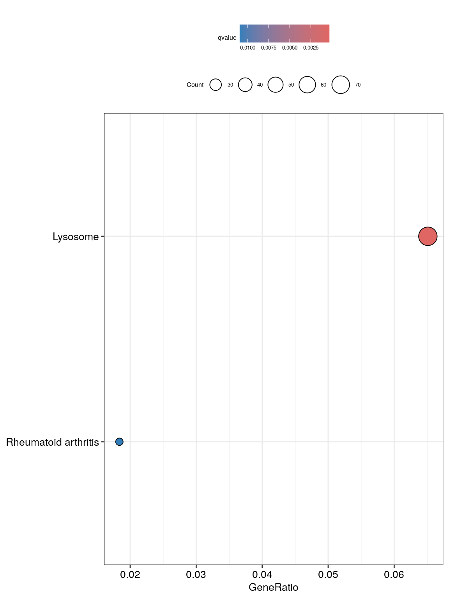
dim(gse_kegg)[1] 2 11#gse_kegg_input_005 <- top.table %>%
# filter(adj.P.Val < 0.05)
#
#gse_kegg_005 <- enrichKEGG(gse_kegg_input_005$entrez,
# keyType = "kegg",
# #minGSSize = 3,
# #maxGSSize = 800,
# pvalueCutoff = 0.1,
# universe = top.table$entrez,
# pAdjustMethod = "BH")
#
#dotplot(gse_kegg_005, showCategory=30, font.size=10, color="qvalue") +
# theme(legend.text=element_text(size=5),
# legend.position = "top",
# legend.box = "vertical",
# text = element_text(size=6))
#
#dim(gse_kegg_005)Downregulated
# Entrez IDs
ensembl <- useEnsembl(biomart = "genes", dataset = "hsapiens_gene_ensembl")
ensembl_ids <- getBM(attributes = c("ensembl_gene_id", "entrezgene_id"),
values = top.table$gene_id,
mart = ensembl)
top.table$entrez <- mapvalues(top.table$gene_id,
from = ensembl_ids$ensembl_gene_id,
to = ensembl_ids$entrezgene_id)
gse_kegg <- enrichKEGG(setdiff(gse_input_down$entrez, c(NA)),
keyType = "kegg",
#minGSSize = 3,
#maxGSSize = 800,
pvalueCutoff = 0.1,
universe = setdiff(top.table$entrez, c(NA)),
pAdjustMethod = "BH")
dotplot(gse_kegg, showCategory=30, font.size=10, color="qvalue") +
theme(legend.text=element_text(size=5),
legend.position = "top",
legend.box = "vertical",
text = element_text(size=6))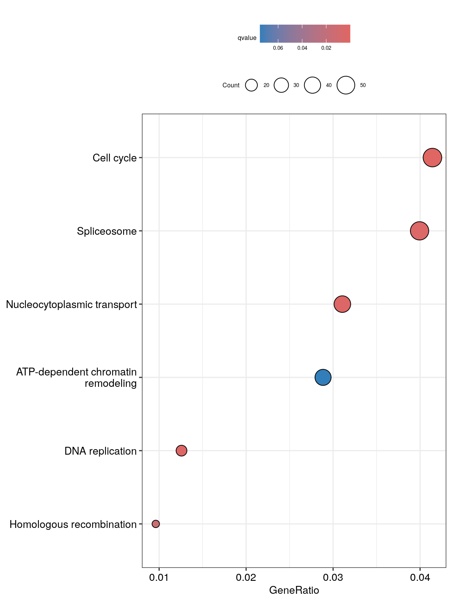
dim(gse_kegg)[1] 6 11Mouse
# Entrez IDs
ensembl <- useEnsembl(biomart = "genes", dataset = "mmusculus_gene_ensembl")
ensembl_ids <- getBM(attributes = c("ensembl_gene_id", "entrezgene_id"),
values = top.table.mouse$gene_id,
mart = ensembl)
top.table.mouse$entrez <- mapvalues(top.table.mouse$gene_id,
from = ensembl_ids$ensembl_gene_id,
to = ensembl_ids$entrezgene_id)
# Ordering top.table.mouse
gse_input <- top.table.mouse %>%
filter(adj.P.Val < 0.1)
gse_kegg <- enrichKEGG(gse_input$entrez,
organism = "mmu",
keyType = "kegg",
#minGSSize = 3,
#maxGSSize = 800,
pvalueCutoff = 0.1,
universe = top.table.mouse$entrez,
pAdjustMethod = "BH")
dotplot(gse_kegg, showCategory=30, font.size=10, color="qvalue") +
theme(legend.text=element_text(size=5),
legend.position = "top",
legend.box = "vertical",
text = element_text(size=6))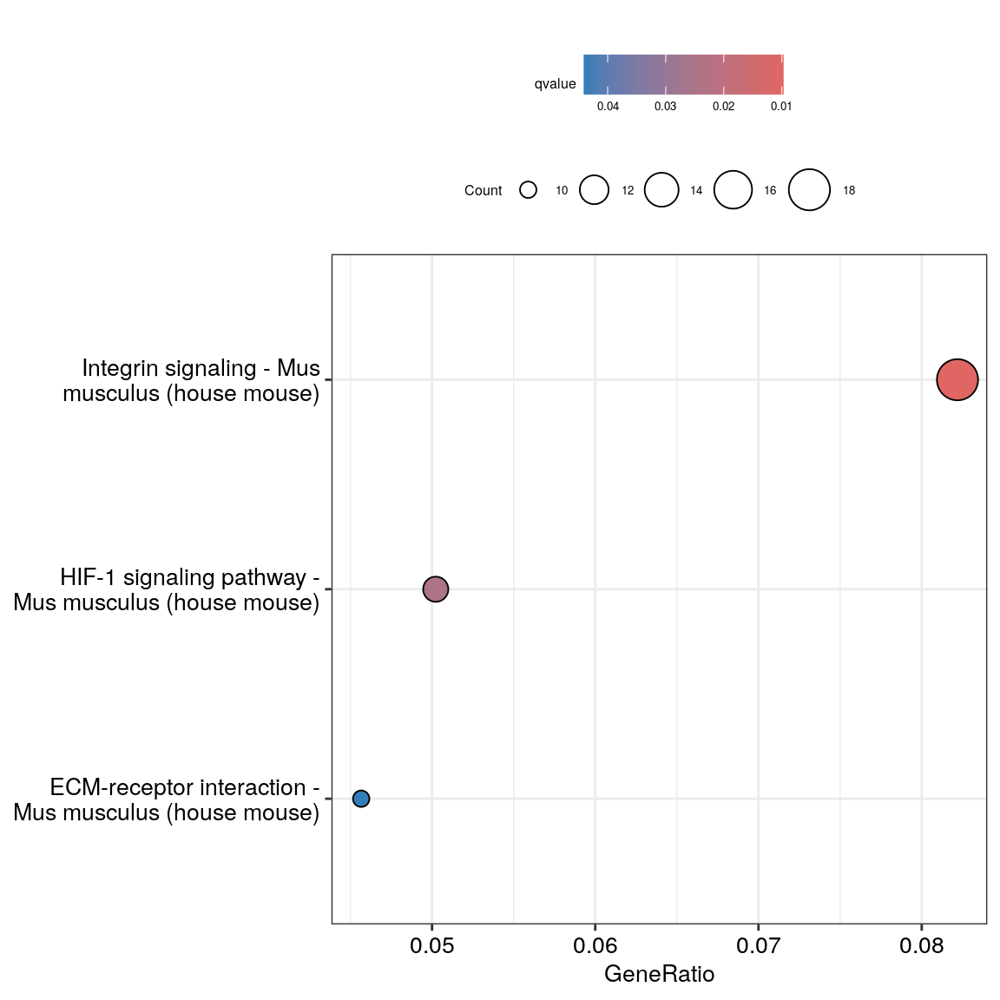
dim(gse_kegg)[1] 3 11#gse_kegg_input_005 <- top.table.mouse %>%
# filter(adj.P.Val < 0.05)
#
#gse_kegg_005 <- enrichKEGG(gse_kegg_input_005$entrez,
# organism = "mmu",
# keyType = "kegg",
# #minGSSize = 3,
# #maxGSSize = 800,
# pvalueCutoff = 0.1,
# universe = top.table.mouse$entrez,
# pAdjustMethod = "BH")
#
#dotplot(gse_kegg_005, showCategory=30, font.size=10, color="qvalue") +
# theme(legend.text=element_text(size=5),
# legend.position = "top",
# legend.box = "vertical",
# text = element_text(size=6))
#
#dim(gse_005)Secretory vs. surface markers
top.table <- read.table("/home/hnatri/PIPAC_spatial/human_MMC_V_res.tsv",
sep = "\t", header = T, fill = T)
top.table$logFC <- as.numeric(top.table$logFC)
top.table$adj.P.Val <- as.numeric(top.table$adj.P.Val)
top.table <- top.table[complete.cases(top.table),]
# Plotting
top_sig <- top.table %>%
filter(adj.P.Val < 0.05 & abs(logFC) > 1)
#dplyr::select(gene_name)
# Sectetory
secretory_markers <- secretory %>%
filter(SecretomeP == "Yes")
# Surface
surface_markers <- secretory %>%
filter(Surfaceome == "Yes")
# Signaling
signaling_markers <- secretory %>%
filter(SignalP == "Yes")
dim(top_sig)[1] 371 15intersect(top_sig$gene_name, secretory_markers$Gene.name) [1] "UBE2C" "LBR" "TP53I3" "C4orf46" "ZWINT" "MZT1" "CACYBP"
[8] "ISCU" "TK1" "TRIAP1" "RCC1" "HPRT1" "NUDT15" "NUP35"
[15] "GINS3" "CBR3" "ZNRF2" "NRGN" "NR2C2AP"intersect(top_sig$gene_name, surface_markers$Gene.name)[1] "GPC6" "NRG1" "CDH4" "EFNB1" "ROBO2" "F11R" "TNFRSF1B"intersect(top_sig$gene_name, signaling_markers$Gene.name) [1] "SULF2" "CCBE1" "GPC6" "PAPPA" "THSD4" "CDH4"
[7] "MAMDC2" "EFNB1" "ROBO2" "IDUA" "PDGFD" "F11R"
[13] "APLN" "TNFRSF1B"venn_list <- list("SecretomeP" = secretory_markers$Gene.name,
"Surfactome" = surface_markers$Gene.name,
"SignalP" = signaling_markers$Gene.name)
ggVennDiagram(venn_list,
label = "count",
set_size = 4) +
NoLegend()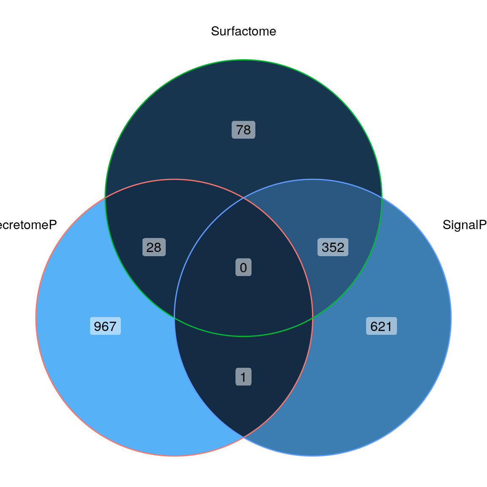
#theme(plot.margin = margin(2, 2, 2, 2, "cm"))
secr_sig <- top_sig %>% filter(gene_name %in% secretory_markers$Gene.name)
surf_sig <- top_sig %>% filter(gene_name %in% surface_markers$Gene.name)
sign_sig <- top_sig %>% filter(gene_name %in% signaling_markers$Gene.name)
secr_sig gene_id gene_name gene_chr gene_start gene_end
ENSG00000175063 ENSG00000175063 UBE2C 20 45812576 45816957
ENSG00000143815 ENSG00000143815 LBR 1 225401502 225428925
ENSG00000115129 ENSG00000115129 TP53I3 2 24077433 24085861
ENSG00000205208 ENSG00000205208 C4orf46 4 158666679 158672255
ENSG00000122952 ENSG00000122952 ZWINT 10 56357228 56361275
ENSG00000204899 ENSG00000204899 MZT1 13 72708357 72727687
ENSG00000116161 ENSG00000116161 CACYBP 1 174999163 175011715
ENSG00000136003 ENSG00000136003 ISCU 12 108562582 108569384
ENSG00000167900 ENSG00000167900 TK1 17 78174075 78187233
ENSG00000170855 ENSG00000170855 TRIAP1 12 120443961 120446412
ENSG00000180198 ENSG00000180198 RCC1 1 28505943 28539300
ENSG00000165704 ENSG00000165704 HPRT1 X 134460153 134520513
ENSG00000136159 ENSG00000136159 NUDT15 13 48037567 48047222
ENSG00000163002 ENSG00000163002 NUP35 2 183117513 183161680
ENSG00000181938 ENSG00000181938 GINS3 16 58295080 58406144
ENSG00000159231 ENSG00000159231 CBR3 21 36134912 36146566
ENSG00000180233 ENSG00000180233 ZNRF2 7 30284307 30367692
ENSG00000154146 ENSG00000154146 NRGN 11 124739846 124747210
ENSG00000184162 ENSG00000184162 NR2C2AP 19 19201416 19203424
gene_strand gene_length gene_biotype
ENSG00000175063 + 1286 protein_coding
ENSG00000143815 - 5257 protein_coding
ENSG00000115129 - 2312 protein_coding
ENSG00000205208 - 3730 protein_coding
ENSG00000122952 - 2378 protein_coding
ENSG00000204899 - 2299 protein_coding
ENSG00000116161 + 4511 protein_coding
ENSG00000136003 + 4439 protein_coding
ENSG00000167900 - 1861 protein_coding
ENSG00000170855 - 1442 protein_coding
ENSG00000180198 + 3888 protein_coding
ENSG00000165704 + 1624 protein_coding
ENSG00000136159 + 2098 protein_coding
ENSG00000163002 + 4046 protein_coding
ENSG00000181938 + 5105 protein_coding
ENSG00000159231 + 1169 protein_coding
ENSG00000180233 + 3696 protein_coding
ENSG00000154146 + 1309 protein_coding
ENSG00000184162 - 1794 protein_coding
gene_description
ENSG00000175063 ubiquitin conjugating enzyme E2 C [Source:HGNC Symbol;Acc:HGNC:15937]
ENSG00000143815 lamin B receptor [Source:HGNC Symbol;Acc:HGNC:6518]
ENSG00000115129 tumor protein p53 inducible protein 3 [Source:HGNC Symbol;Acc:HGNC:19373]
ENSG00000205208 chromosome 4 open reading frame 46 [Source:HGNC Symbol;Acc:HGNC:27320]
ENSG00000122952 ZW10 interacting kinetochore protein [Source:HGNC Symbol;Acc:HGNC:13195]
ENSG00000204899 mitotic spindle organizing protein 1 [Source:HGNC Symbol;Acc:HGNC:33830]
ENSG00000116161 calcyclin binding protein [Source:HGNC Symbol;Acc:HGNC:30423]
ENSG00000136003 iron-sulfur cluster assembly enzyme [Source:HGNC Symbol;Acc:HGNC:29882]
ENSG00000167900 thymidine kinase 1 [Source:HGNC Symbol;Acc:HGNC:11830]
ENSG00000170855 TP53 regulated inhibitor of apoptosis 1 [Source:HGNC Symbol;Acc:HGNC:26937]
ENSG00000180198 regulator of chromosome condensation 1 [Source:HGNC Symbol;Acc:HGNC:1913]
ENSG00000165704 hypoxanthine phosphoribosyltransferase 1 [Source:HGNC Symbol;Acc:HGNC:5157]
ENSG00000136159 nudix hydrolase 15 [Source:HGNC Symbol;Acc:HGNC:23063]
ENSG00000163002 nucleoporin 35 [Source:HGNC Symbol;Acc:HGNC:29797]
ENSG00000181938 GINS complex subunit 3 [Source:HGNC Symbol;Acc:HGNC:25851]
ENSG00000159231 carbonyl reductase 3 [Source:HGNC Symbol;Acc:HGNC:1549]
ENSG00000180233 zinc and ring finger 2 [Source:HGNC Symbol;Acc:HGNC:22316]
ENSG00000154146 neurogranin [Source:HGNC Symbol;Acc:HGNC:8000]
ENSG00000184162 nuclear receptor 2C2 associated protein [Source:HGNC Symbol;Acc:HGNC:30763]
logFC AveExpr t
ENSG00000175063 -3.995491 4.02331868464697 15.159379
ENSG00000143815 -2.051946 5.70871507873065 15.133421
ENSG00000115129 1.647230 6.98348147842101 -15.056177
ENSG00000205208 -1.788687 5.25427619926197 12.242046
ENSG00000122952 -1.831653 5.88306299079658 11.976788
ENSG00000204899 -1.349790 6.41363008749849 11.573323
ENSG00000116161 -1.006566 7.2041796032513 11.319751
ENSG00000136003 1.104572 6.7172538004708 -10.386476
ENSG00000167900 -1.288227 6.30411804522547 9.863934
ENSG00000170855 1.084367 6.18868431393251 -9.211794
ENSG00000180198 -1.037340 5.77943409118834 8.628140
ENSG00000165704 -1.015624 5.37332497688872 7.648310
ENSG00000136159 -1.010705 5.63816742315287 7.478410
ENSG00000163002 -1.358489 4.22308205638188 7.401307
ENSG00000181938 -1.952075 2.56933029869175 6.354402
ENSG00000159231 -1.801515 1.61102380998792 4.360835
ENSG00000180233 -1.293430 1.88813274068868 3.870964
ENSG00000154146 -1.522394 1.06145420974228 3.780563
ENSG00000184162 -1.041288 2.55410678548813 3.745998
P.Value adj.P.Val
ENSG00000175063 0.0000000000544398434604776 0.000000006978994
ENSG00000143815 0.0000000000558752817166270 0.000000007037345
ENSG00000115129 0.0000000000603884523795088 0.000000007474633
ENSG00000205208 0.000000001332048789358 0.000000103943242
ENSG00000122952 0.00000000183697535516995 0.000000137371313
ENSG00000204899 0.00000000302885399560132 0.000000204463658
ENSG00000116161 0.0000000041771825855913 0.000000265380476
ENSG00000136003 0.0000000143458227114685 0.000000746294647
ENSG00000167900 0.0000000297101452973037 0.000001376058923
ENSG00000170855 0.0000000767584961091713 0.000003185255743
ENSG00000180198 0.000000186962665829659 0.000007027251194
ENSG00000165704 0.000000914793925889792 0.000026164564119
ENSG00000136159 0.00000121991097488462 0.000033173260942
ENSG00000163002 0.00000139188691093325 0.000037284910946
ENSG00000181938 0.00000903212871747019 0.000174775342487
ENSG00000159231 0.00047251181727921 0.004028696361339
ENSG00000180233 0.00132737848981495 0.009243485675665
ENSG00000154146 0.00160798588645914 0.010788533344757
ENSG00000184162 0.00173040839275932 0.011438859900202
B
ENSG00000175063 15.5127697357357
ENSG00000143815 15.4232882802587
ENSG00000115129 15.1844559244717
ENSG00000205208 12.2182738159534
ENSG00000122952 11.7854584504942
ENSG00000204899 11.1575199197245
ENSG00000116161 10.6985290201877
ENSG00000136003 9.48895621156451
ENSG00000167900 8.79483380514142
ENSG00000170855 7.835372971563
ENSG00000180198 6.97096328195971
ENSG00000165704 5.40628969459286
ENSG00000136159 5.05207374222468
ENSG00000163002 5.23331998853112
ENSG00000181938 3.6580879158059
ENSG00000159231 -0.0995425764198448
ENSG00000180233 -1.19604619582134
ENSG00000154146 -1.24405733140601
ENSG00000184162 -1.62217219382227surf_sig gene_id gene_name gene_chr gene_start gene_end
ENSG00000183098 ENSG00000183098 GPC6 13 93226842 94407401
ENSG00000157168 ENSG00000157168 NRG1 8 31639386 32767959
ENSG00000179242 ENSG00000179242 CDH4 20 61252426 61940617
ENSG00000090776 ENSG00000090776 EFNB1 X 68828997 68842147
ENSG00000185008 ENSG00000185008 ROBO2 3 75906695 77649964
ENSG00000158769 ENSG00000158769 F11R 1 160995211 161021348
ENSG00000028137 ENSG00000028137 TNFRSF1B 1 12167003 12209228
gene_strand gene_length gene_biotype
ENSG00000183098 + 6468 protein_coding
ENSG00000157168 + 11328 protein_coding
ENSG00000179242 + 7351 protein_coding
ENSG00000090776 + 3314 protein_coding
ENSG00000185008 + 16663 protein_coding
ENSG00000158769 - 5066 protein_coding
ENSG00000028137 + 3766 protein_coding
gene_description
ENSG00000183098 glypican 6 [Source:HGNC Symbol;Acc:HGNC:4454]
ENSG00000157168 neuregulin 1 [Source:HGNC Symbol;Acc:HGNC:7997]
ENSG00000179242 cadherin 4 [Source:HGNC Symbol;Acc:HGNC:1763]
ENSG00000090776 ephrin B1 [Source:HGNC Symbol;Acc:HGNC:3226]
ENSG00000185008 roundabout guidance receptor 2 [Source:HGNC Symbol;Acc:HGNC:10250]
ENSG00000158769 F11 receptor [Source:HGNC Symbol;Acc:HGNC:14685]
ENSG00000028137 TNF receptor superfamily member 1B [Source:HGNC Symbol;Acc:HGNC:11917]
logFC AveExpr t
ENSG00000183098 -1.205878 6.18680383333543 11.196234
ENSG00000157168 1.796854 5.98857590066224 -10.669611
ENSG00000179242 -2.025757 4.75230829824995 9.188021
ENSG00000090776 1.367916 5.54373862301089 -8.338517
ENSG00000185008 -2.251232 0.309454734036275 6.506384
ENSG00000158769 1.726978 1.21732950849696 -4.147784
ENSG00000028137 -1.591342 1.17550585423025 3.640923
P.Value adj.P.Val B
ENSG00000183098 0.00000000489534662714527 0.0000002953252 10.6864795597489
ENSG00000157168 0.0000000097807794887802 0.0000005319410 10.0471560818942
ENSG00000179242 0.0000000795316255609748 0.0000032813652 8.10010400589734
ENSG00000090776 0.000000295222857475567 0.0000100885609 6.57791765444725
ENSG00000185008 0.00000682110535071416 0.0001379400431 4.03062315834709
ENSG00000158769 0.000739237989466761 0.0057936566882 -0.466778924453059
ENSG00000028137 0.00216304164161118 0.0134562183233 -1.49989260668197sign_sig gene_id gene_name gene_chr gene_start gene_end
ENSG00000196562 ENSG00000196562 SULF2 20 47656348 47786616
ENSG00000183287 ENSG00000183287 CCBE1 18 59430939 59697662
ENSG00000183098 ENSG00000183098 GPC6 13 93226842 94407401
ENSG00000182752 ENSG00000182752 PAPPA 9 116153804 116402322
ENSG00000187720 ENSG00000187720 THSD4 15 71096952 71783383
ENSG00000179242 ENSG00000179242 CDH4 20 61252426 61940617
ENSG00000165072 ENSG00000165072 MAMDC2 9 70043581 70226970
ENSG00000090776 ENSG00000090776 EFNB1 X 68828997 68842147
ENSG00000185008 ENSG00000185008 ROBO2 3 75906695 77649964
ENSG00000127415 ENSG00000127415 IDUA 4 986997 1004506
ENSG00000170962 ENSG00000170962 PDGFD 11 103907186 104164379
ENSG00000158769 ENSG00000158769 F11R 1 160995211 161021348
ENSG00000171388 ENSG00000171388 APLN X 129645259 129654937
ENSG00000028137 ENSG00000028137 TNFRSF1B 1 12167003 12209228
gene_strand gene_length gene_biotype
ENSG00000196562 - 6657 protein_coding
ENSG00000183287 - 6753 protein_coding
ENSG00000183098 + 6468 protein_coding
ENSG00000182752 + 11573 protein_coding
ENSG00000187720 + 15837 protein_coding
ENSG00000179242 + 7351 protein_coding
ENSG00000165072 + 3854 protein_coding
ENSG00000090776 + 3314 protein_coding
ENSG00000185008 + 16663 protein_coding
ENSG00000127415 + 4000 protein_coding
ENSG00000170962 - 4266 protein_coding
ENSG00000158769 - 5066 protein_coding
ENSG00000171388 - 3205 protein_coding
ENSG00000028137 + 3766 protein_coding
gene_description
ENSG00000196562 sulfatase 2 [Source:HGNC Symbol;Acc:HGNC:20392]
ENSG00000183287 collagen and calcium binding EGF domains 1 [Source:HGNC Symbol;Acc:HGNC:29426]
ENSG00000183098 glypican 6 [Source:HGNC Symbol;Acc:HGNC:4454]
ENSG00000182752 pappalysin 1 [Source:HGNC Symbol;Acc:HGNC:8602]
ENSG00000187720 thrombospondin type 1 domain containing 4 [Source:HGNC Symbol;Acc:HGNC:25835]
ENSG00000179242 cadherin 4 [Source:HGNC Symbol;Acc:HGNC:1763]
ENSG00000165072 MAM domain containing 2 [Source:HGNC Symbol;Acc:HGNC:23673]
ENSG00000090776 ephrin B1 [Source:HGNC Symbol;Acc:HGNC:3226]
ENSG00000185008 roundabout guidance receptor 2 [Source:HGNC Symbol;Acc:HGNC:10250]
ENSG00000127415 iduronidase, alpha-L- [Source:HGNC Symbol;Acc:HGNC:5391]
ENSG00000170962 platelet derived growth factor D [Source:HGNC Symbol;Acc:HGNC:30620]
ENSG00000158769 F11 receptor [Source:HGNC Symbol;Acc:HGNC:14685]
ENSG00000171388 apelin [Source:HGNC Symbol;Acc:HGNC:16665]
ENSG00000028137 TNF receptor superfamily member 1B [Source:HGNC Symbol;Acc:HGNC:11917]
logFC AveExpr t
ENSG00000196562 1.729402 5.65057113306834 -12.253569
ENSG00000183287 -1.268322 6.4772802527745 11.897289
ENSG00000183098 -1.205878 6.18680383333543 11.196234
ENSG00000182752 1.284120 7.3028995259531 -11.028278
ENSG00000187720 -1.069805 6.78057239326602 9.815788
ENSG00000179242 -2.025757 4.75230829824995 9.188021
ENSG00000165072 2.046476 4.82842888510875 -8.731566
ENSG00000090776 1.367916 5.54373862301089 -8.338517
ENSG00000185008 -2.251232 0.309454734036275 6.506384
ENSG00000127415 1.056589 4.95402570432196 -6.455043
ENSG00000170962 -1.304985 2.49655180537815 4.827939
ENSG00000158769 1.726978 1.21732950849696 -4.147784
ENSG00000171388 -1.738760 0.875598479292092 3.711925
ENSG00000028137 -1.591342 1.17550585423025 3.640923
P.Value adj.P.Val B
ENSG00000196562 0.00000000131374956733631 0.0000001036418 12.1850683819285
ENSG00000183287 0.00000000202499837001103 0.0000001498708 11.5642601846124
ENSG00000183098 0.00000000489534662714527 0.0000002953252 10.6864795597489
ENSG00000182752 0.00000000608744542155153 0.0000003524336 10.325144565956
ENSG00000187720 0.0000000318166753182545 0.0000014548529 8.64183064876326
ENSG00000179242 0.0000000795316255609748 0.0000032813652 8.10010400589734
ENSG00000165072 0.000000159211516909211 0.0000060796781 7.31893444736772
ENSG00000090776 0.000000295222857475567 0.0000100885609 6.57791765444725
ENSG00000185008 0.00000682110535071416 0.0001379400431 4.03062315834709
ENSG00000127415 0.00000749707401474366 0.0001495041510 3.3418520979307
ENSG00000170962 0.000179427056685855 0.0019083064296 0.606202042936899
ENSG00000158769 0.000739237989466761 0.0057936566882 -0.466778924453059
ENSG00000171388 0.00186024541401855 0.0120206696911 -1.33617874301722
ENSG00000028137 0.00216304164161118 0.0134562183233 -1.49989260668197top.table$group <- ifelse(top.table$gene_name %in% secretory_markers$Gene.name, "Secretory",
ifelse(top.table$gene_name %in% surface_markers$Gene.name, "Surface",
ifelse(top.table$gene_name %in% signaling_markers$Gene.name, "Signaling", "Other")))
top.table_secr <- top.table %>%
filter(gene_name %in% secretory_markers$Gene.name)
top.table_surf <- top.table %>%
filter(gene_name %in% surface_markers$Gene.name)
top.table_sign <- top.table %>%
filter(gene_name %in% signaling_markers$Gene.name)
EnhancedVolcano(top.table_secr,
lab = top.table_secr$gene_name,
x = 'logFC',
y = 'adj.P.Val',
title = "",
subtitle = "",
pCutoff = 0.05,
FCcutoff = 1,
#ylim = c(0, max(-log10(top.table[["adj.P.Val"]]), na.rm = TRUE) + 0.5),
caption = "",
titleLabSize = 12,
subtitleLabSize = 2,
legendLabSize = 10,
axisLabSize = 10,
legendIconSize = 3,
labSize = 4)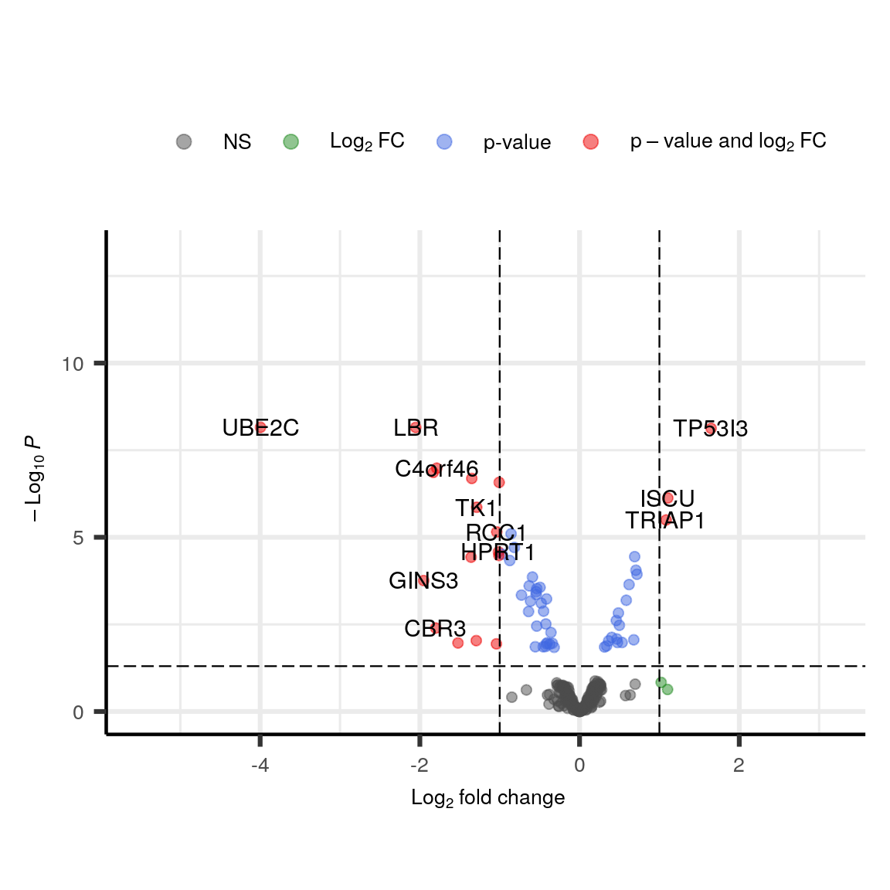
#top.table %>% filter(gene_name == "GINS3")
metadata_expression$Treatment <- factor(metadata_expression$Treatment,
levels = c("V", "MMC"))
metadata_expression %>%
ggplot(aes(x = Treatment, y = ENSG00000196562, fill = Treatment)) +
geom_violin(alpha = 0.5) +
geom_point(position = position_jitter(seed = 1, width = 0.2)) +
ylab("SULF2 expression (FPKM)") +
xlab("Treatment") +
theme_classic() +
theme(legend.position = "none") +
theme(axis.text.x = element_text(angle = 45, vjust = 1, hjust = 1))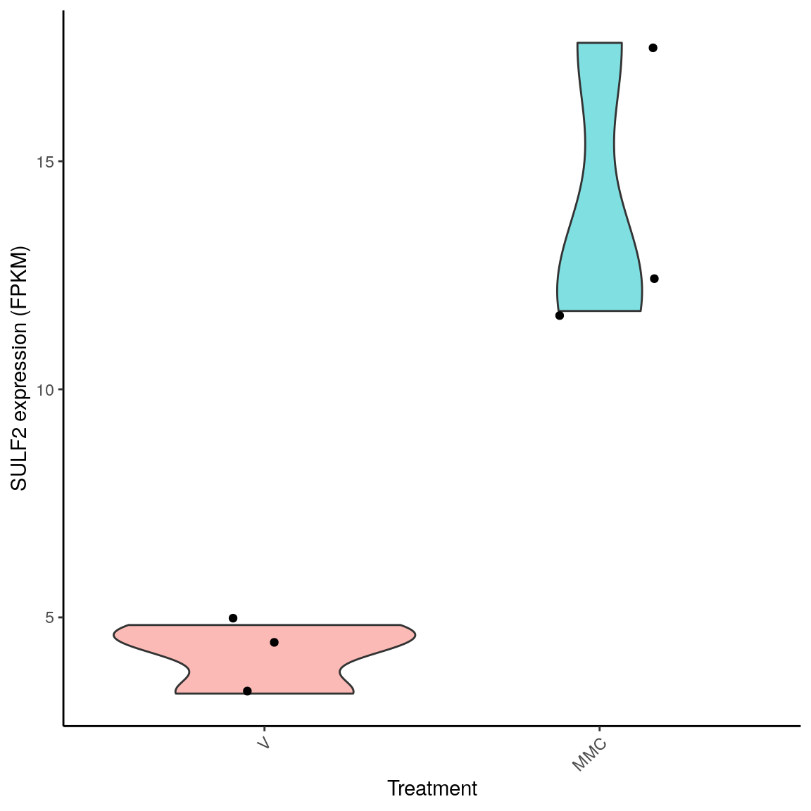
metadata_expression %>%
ggplot(aes(x = Treatment, y = ENSG00000115129, fill = Treatment)) +
geom_violin(alpha = 0.5) +
geom_point(position = position_jitter(seed = 1, width = 0.2)) +
ylab("TP53I3 expression (FPKM)") +
xlab("Treatment") +
theme_classic() +
theme(legend.position = "none") +
theme(axis.text.x = element_text(angle = 45, vjust = 1, hjust = 1))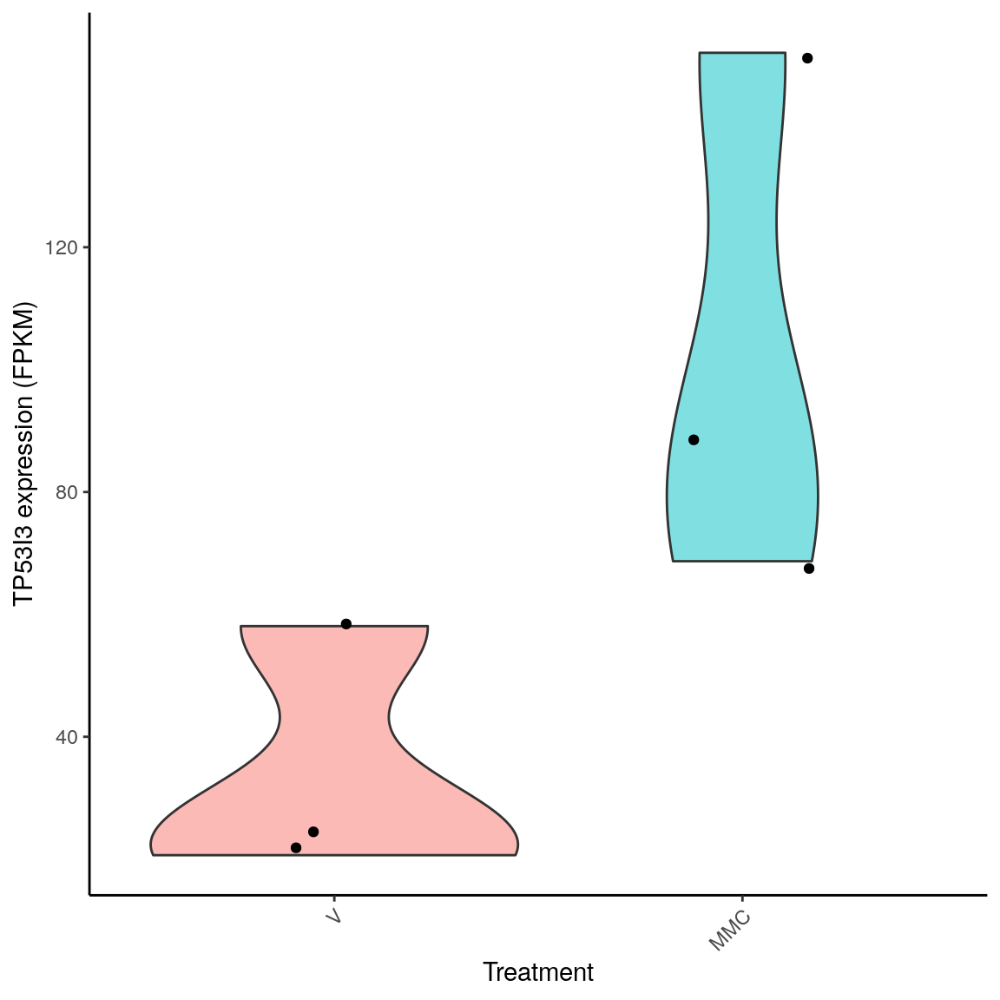
metadata_expression %>%
ggplot(aes(x = Treatment, y = ENSG00000170962, fill = Treatment)) +
geom_violin(alpha = 0.5) +
geom_point(position = position_jitter(seed = 1, width = 0.2)) +
ylab("PDGFD expression (FPKM)") +
xlab("Treatment") +
theme_classic() +
theme(legend.position = "none") +
theme(axis.text.x = element_text(angle = 45, vjust = 1, hjust = 1))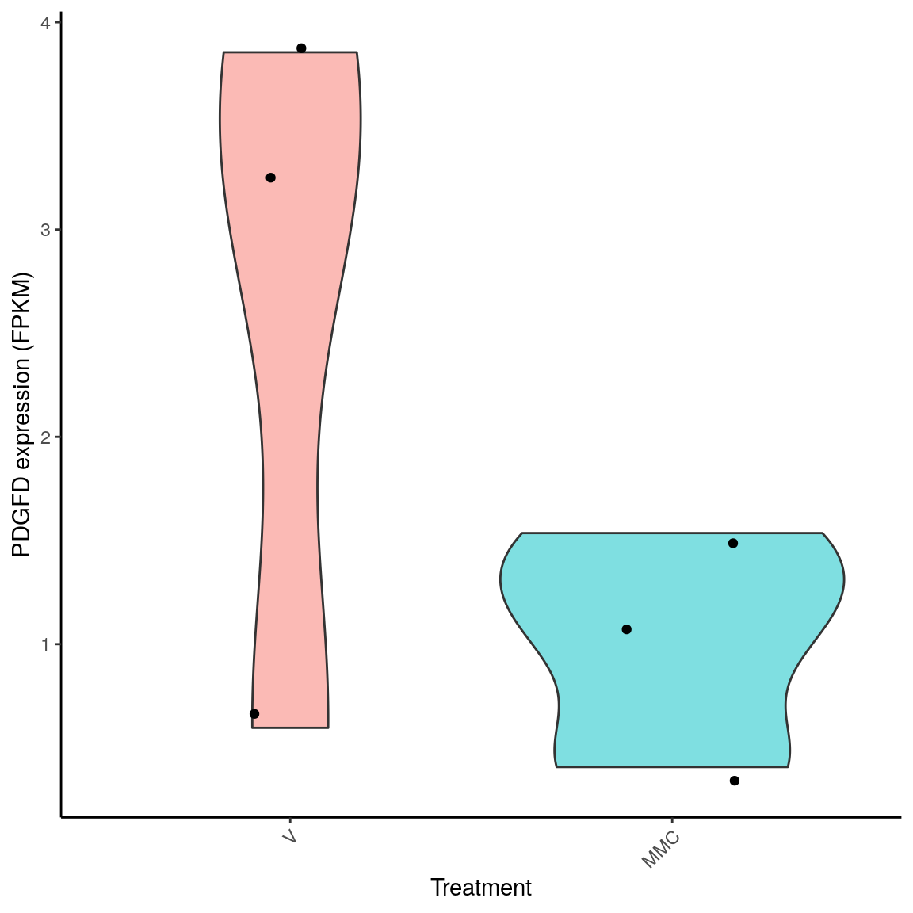
metadata_expression %>%
ggplot(aes(x = Treatment, y = ENSG00000179242, fill = Treatment)) +
geom_violin(alpha = 0.5) +
geom_point(position = position_jitter(seed = 1, width = 0.2)) +
ylab("CDH4 expression (FPKM)") +
xlab("Treatment") +
theme_classic() +
theme(legend.position = "none") +
theme(axis.text.x = element_text(angle = 45, vjust = 1, hjust = 1))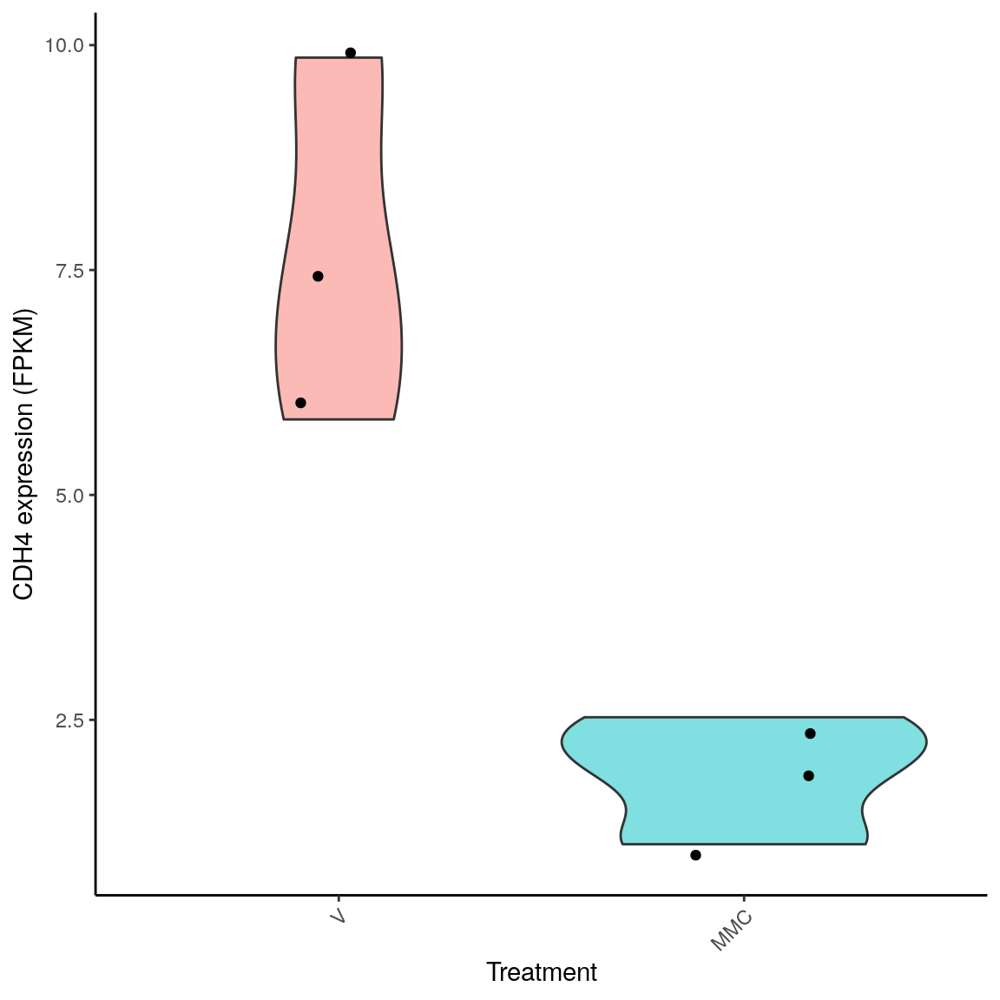
metadata_expression %>%
ggplot(aes(x = Treatment, y = ENSG00000157168, fill = Treatment)) +
geom_violin(alpha = 0.5) +
geom_point(position = position_jitter(seed = 1, width = 0.2)) +
ylab("NRG1 expression (FPKM)") +
xlab("Treatment") +
theme_classic() +
theme(legend.position = "none") +
theme(axis.text.x = element_text(angle = 45, vjust = 1, hjust = 1))
metadata_expression %>%
ggplot(aes(x = Treatment, y = ENSG00000157168, fill = Treatment)) +
geom_violin(alpha = 0.5) +
geom_point(position = position_jitter(seed = 1, width = 0.2)) +
ylab("NRG1 expression (FPKM)") +
xlab("Treatment") +
theme_classic() +
theme(legend.position = "none") +
theme(axis.text.x = element_text(angle = 45, vjust = 1, hjust = 1))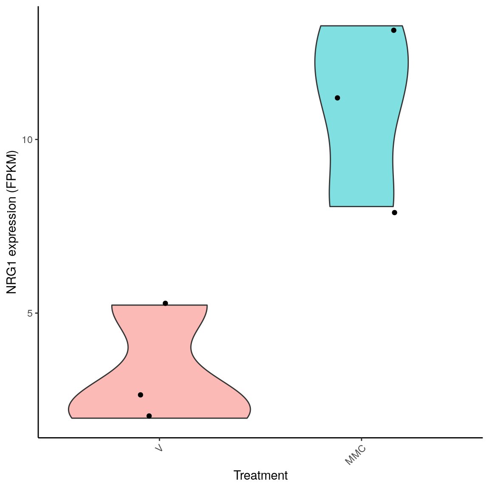
metadata_expression %>%
ggplot(aes(x = Treatment, y = ENSG00000181938, fill = Treatment)) +
geom_violin(alpha = 0.5) +
geom_point(position = position_jitter(seed = 1, width = 0.2)) +
ylab("GINS3 expression (FPKM)") +
xlab("Treatment") +
theme_classic() +
theme(legend.position = "none") +
theme(axis.text.x = element_text(angle = 45, vjust = 1, hjust = 1))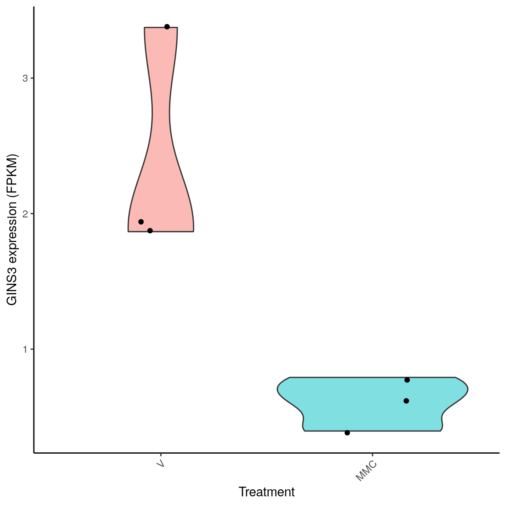
EnhancedVolcano(top.table_surf,
lab = top.table_surf$gene_name,
x = 'logFC',
y = 'adj.P.Val',
title = "",
subtitle = "",
pCutoff = 0.05,
FCcutoff = 1,
#ylim = c(0, max(-log10(top.table[["adj.P.Val"]]), na.rm = TRUE) + 0.5),
caption = "",
titleLabSize = 12,
subtitleLabSize = 2,
legendLabSize = 10,
axisLabSize = 10,
legendIconSize = 3,
labSize = 4)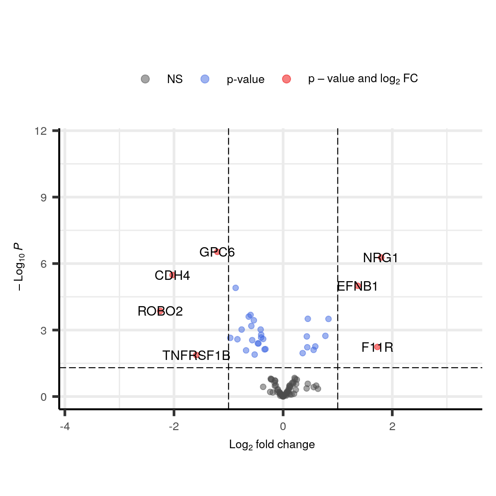
EnhancedVolcano(top.table_sign,
lab = top.table_sign$gene_name,
x = 'logFC',
y = 'adj.P.Val',
title = "",
subtitle = "",
pCutoff = 0.05,
FCcutoff = 1,
#ylim = c(0, max(-log10(top.table[["adj.P.Val"]]), na.rm = TRUE) + 0.5),
caption = "",
titleLabSize = 12,
subtitleLabSize = 2,
legendLabSize = 10,
axisLabSize = 10,
legendIconSize = 3,
labSize = 4)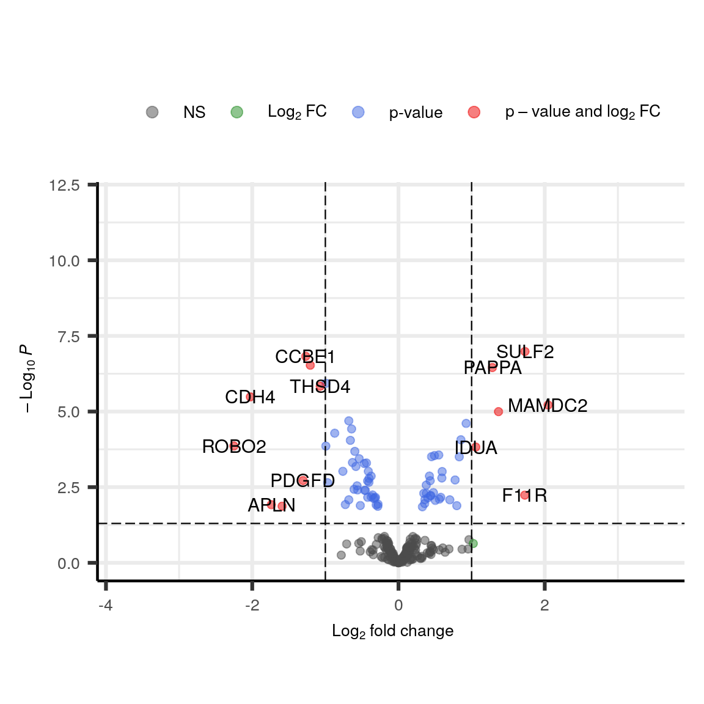
Human and mouse together
#mouse_human_genes <- read.table("http://www.informatics.jax.org/downloads/reports/HOM_MouseHumanSequence.rpt",
# sep="\t", header = T)
#
#mouse <- split.data.frame(mouse_human_genes,mouse_human_genes$Common.Organism.Name)[[2]]
#human <- split.data.frame(mouse_human_genes,mouse_human_genes$Common.Organism.Name)[[1]]
#mouse <- mouse[,c(1,4)]
#human <- human[,c(1,4)]
#mh_data <- merge.data.frame(mouse, human, by = "DB.Class.Key",all.y = TRUE)
mouse_counts$mouse_gene_name <- mouse_counts$gene_name
mouse_counts$gene_name <- mapvalues(mouse_counts$mouse_gene_name,
from = mh_data$Symbol.x,
to = mh_data$Symbol.y)
all_counts_df <- merge(mouse_counts, human_counts, by = "gene_name")
all_counts_df <- all_counts_df[,-grep(".x", colnames(all_counts_df))]
all_counts_df <- all_counts_df[,-grep("mouse_gene", colnames(all_counts_df))]
all_counts_df <- distinct(all_counts_df)
gene_info <- all_counts_df[,grep("gene", colnames(all_counts_df))]
keeps <- table(all_counts_df$gene_id.y) %>% as.data.frame() %>%
filter(Freq==1) %>% dplyr::select(Var1)
all_counts_df <- all_counts_df %>% filter(gene_id.y %in% unlist(keeps))
rownames(all_counts_df) <- all_counts_df$gene_id.y
all_counts_df <- all_counts_df[,c(grep("COL", colnames(all_counts_df)), grep("CAF", colnames(all_counts_df)))]
# Excluding ribosomal genes
ribo <- gene_info[grep("^RP", gene_info$gene_name),]
all_counts_df <- all_counts_df[!(row.names(all_counts_df) %in% ribo$gene_id), ]
colnames(gene_info) <- gsub(".y", "", colnames(gene_info))
# Arranging gene info to match the count matrix
gene_info <- gene_info %>%
filter(gene_id %in% rownames(all_counts_df)) %>%
dplyr::arrange(factor(gene_id, levels = rownames(all_counts_df)))
#identical(gene_info$gene_id, rownames(all_counts_df))
# Calculating gene length
#gene_info$length <- abs(gene_info$stop - gene_info$start)
# Create DGEList object
d0 <- DGEList(all_counts_df, genes = gene_info)
# Calculate normalization factors
d0 <- calcNormFactors(d0)
d0An object of class "DGEList"
$counts
COL4_V COL5_V COL7_V COL4_MMC COL5_MMC COL7_MMC CAF1_V1 CAF1_V2
ENSG00000121410 4 7 2 12 4 5 0 0
ENSG00000094914 1036 983 1026 1121 1228 1136 880 974
ENSG00000114771 70 68 26 64 147 55 0 0
ENSG00000127837 2263 2030 2045 3081 2814 2407 1584 1829
ENSG00000131043 869 929 1034 1404 1311 1172 456 555
CAF1_MMC1 CAF1_MMC2 CAF2_V1 CAF2_V2 CAF2_MMC1 CAF2_MMC2
ENSG00000121410 0 0 0 0 0 0
ENSG00000094914 1273 1011 1072 1213 1445 1521
ENSG00000114771 0 0 0 0 0 0
ENSG00000127837 1822 1616 2161 2143 2237 2079
ENSG00000131043 455 434 458 395 481 457
3925 more rows ...
$samples
group lib.size norm.factors
COL4_V 1 13726542 0.7760116
COL5_V 1 13768325 0.8071621
COL7_V 1 12661900 0.7988017
COL4_MMC 1 16116581 0.7947717
COL5_MMC 1 14387440 0.8548973
9 more rows ...
$genes
gene_name gene_id gene_chr gene_start gene_end
ENSG00000121410 A1BG ENSG00000121410 19 58345178 58353499
ENSG00000094914 AAAS ENSG00000094914 12 53307456 53324864
ENSG00000114771 AADAC ENSG00000114771 3 151814037 151828488
ENSG00000127837 AAMP ENSG00000127837 2 218264123 218270257
ENSG00000131043 AAR2 ENSG00000131043 20 36236459 36270918
gene_strand gene_length gene_biope
ENSG00000121410 - 4006 protein_coding
ENSG00000094914 - 4138 protein_coding
ENSG00000114771 + 1668 protein_coding
ENSG00000127837 - 3140 protein_coding
ENSG00000131043 + 3101 protein_coding
gene_description
ENSG00000121410 alpha-1-B glycoprotein [Source:HGNC Symbol;Acc:HGNC:5]
ENSG00000094914 aladin WD repeat nucleoporin [Source:HGNC Symbol;Acc:HGNC:13666]
ENSG00000114771 arylacetamide deacetylase [Source:HGNC Symbol;Acc:HGNC:17]
ENSG00000127837 angio associated migratory cell protein [Source:HGNC Symbol;Acc:HGNC:18]
ENSG00000131043 AAR2 splicing factor homolog [Source:HGNC Symbol;Acc:HGNC:15886]
3925 more rows ...# Filter low-expressed genes
cutoff <- 1
drop <- which(apply(rpkm(d0, gene.length = "gene_length"), 1, max) < cutoff)
d <- d0[-drop,]
dim(d) # number of genes left[1] 2651 14# Matching sample names with patient metadata
#appendiceal_metadata <- merge(appendiceal_metadata, sample_key, by = "Patient.ID")
#appendiceal_metadata <- appendiceal_metadata %>%
# filter(X2025.HonestBroker.specimen.number %in% colnames(all_counts_df)) %>%
# dplyr::arrange(match(X2025.HonestBroker.specimen.number, colnames(all_counts_df)))
# Dimensionality reduction colored with various metadata
group_info <- sapply(strsplit(colnames(all_counts_df), "_"), `[`, 2)
sample_info <- sapply(strsplit(colnames(all_counts_df), "_"), `[`, 1)
# Set colors and shapes
cols <- c("deeppink3", "cyan4", "yellow3", "slateblue4", "tomato3")
#shps <- c(15, 16, 17, 18, 15, 16, 17, 18)
shps <- c(15, 15, 15, 16, 16, 16, 15, 15, 16, 16, 15, 15, 16, 16)
names(cols) <- unique(sample_info)
names(shps) <- group_info
plotMDS(d, top = 500, col = cols, pch = shps, cex = 1, labels = colnames(all_counts_df), dim.plot = c(1, 2))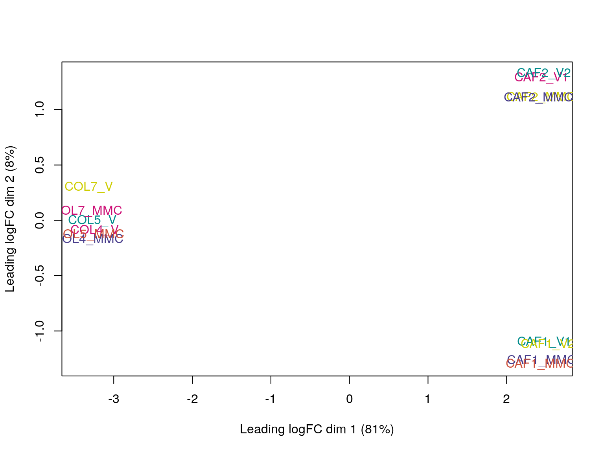
#legend('bottomleft', col=cols, legend=unique(sample_info), pch = 16, cex = 0.7)
#legend('topleft', legend=unique(group_info), pch = shps, cex = 0.7)
plotMDS(d, top = 500, col = cols, pch = shps, cex = 1, labels = colnames(all_counts_df), dim.plot = c(1, 3))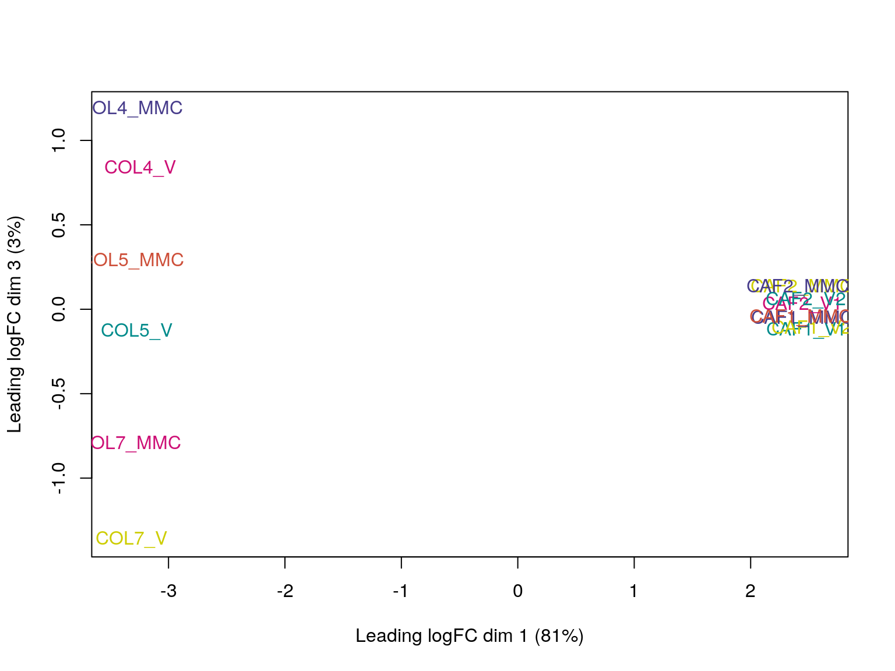
plotMDS(d, top = 500, col = cols, pch = shps, cex = 1, labels = colnames(all_counts_df), dim.plot = c(2, 3))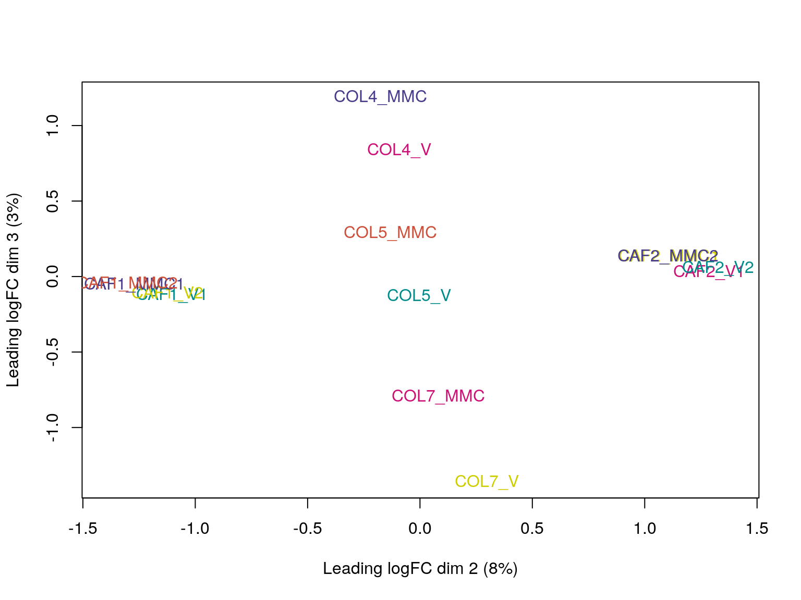
plotMDS(d, top = 500, col = cols, pch = shps, cex = 1, labels = colnames(all_counts_df), dim.plot = c(1, 4))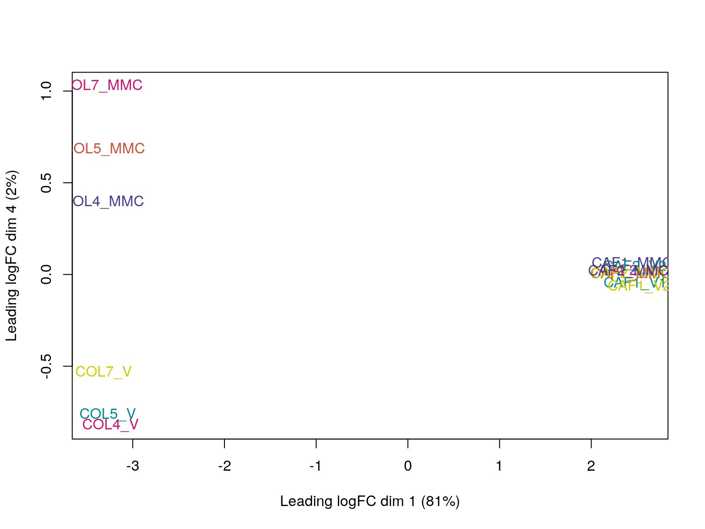
plotMDS(d, top = 500, col = cols, pch = shps, cex = 1, labels = colnames(all_counts_df), dim.plot = c(2, 4))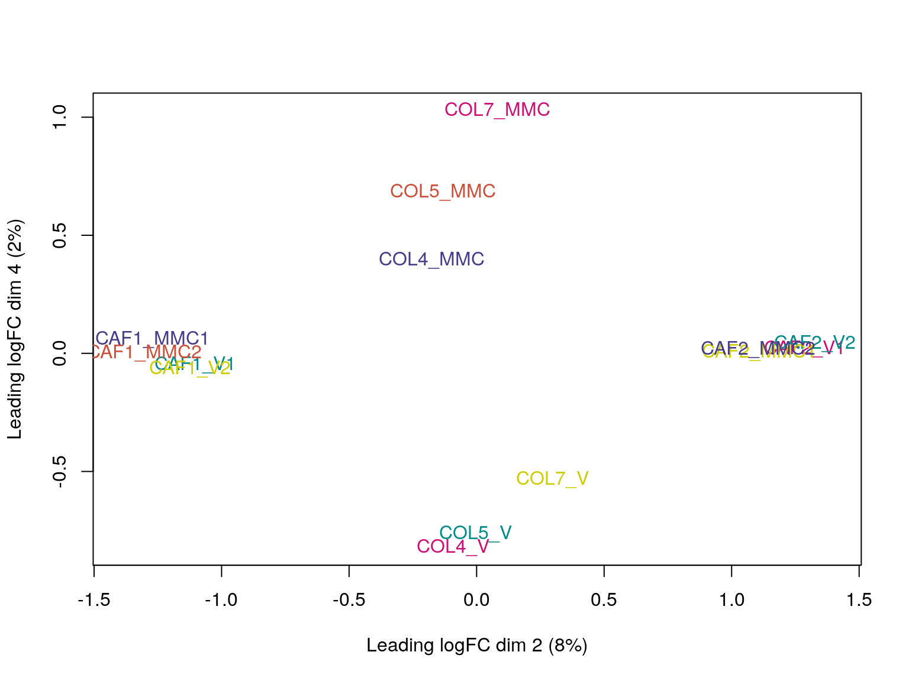
plotMDS(d, top = 500, col = cols, pch = shps, cex = 1, labels = colnames(all_counts_df), dim.plot = c(3, 4))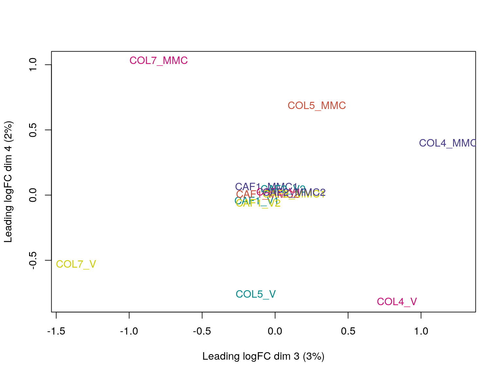
#legend('bottomright', col=cols, legend=unique(sample_info), pch = 16, cex = 0.7)
#legend('topright', legend=unique(group_info), pch = shps, cex = 0.7)DE analysis
#group_info <- sapply(strsplit(metadata_expression$Sample_Treatment, "_"), `[`, 1)
#sample_info <- c("COL4", "COL5", "COL7", "COL4", "COL5", "COL7")
# Voom transformation and calculation of variance weights.
group_info2 <- gsub("1", "", group_info)
group_info2 <- gsub("2", "", group_info2)
groups <- data.frame(sample_info = sample_info, group_info = group_info2)
#group_info2 <- c("V", "V", "MMC", "MMC", "V", "V", "MMC", "MMC")
mm <- model.matrix(~0 + sample_info + group_info2)
# Renaming columns
#colnames(mm) <- c("MMC", "V")
# Filtering based on the design matrix
# Defaults: min.count = 10, min.total.count = 15, large.n = 10, min.prop = 0.7
keep <- filterByExpr(d, mm)
d1 <- d[keep,]# The above specifies a model where each coefficient corresponds to a group mean
# Voom
y1 <- voom(d1, mm, plot = T)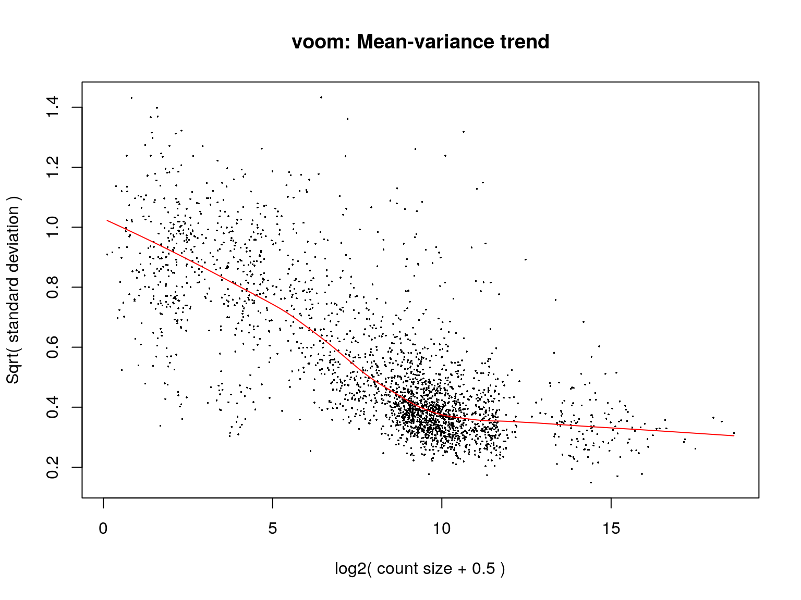
# Fitting linear models in limma
# lmFit fits a linear model using weighted least squares for each gene:
fit1 <- lmFit(y1, mm)
# Specify comparisons
contr1 <- makeContrasts(colnames(coef(fit1)), levels = colnames(coef(fit1)))
tmp <- contrasts.fit(fit1, contr1)
tmp <- eBayes(tmp)
top.table.human.mouse <- topTable(tmp, sort.by = "P", n = Inf)
top.table.human.mouse$gene_name <- mapvalues(x = rownames(top.table.human.mouse),
from = gene_info$gene_id,
to = gene_info$gene_name)
head(top.table.human.mouse) gene_name gene_id gene_chr gene_start gene_end
ENSG00000163071 SPATA18 ENSG00000163071 4 52051331 52097292
ENSG00000135905 DOCK10 ENSG00000135905 2 224765090 225042445
ENSG00000186847 KRT14 ENSG00000186847 17 41582279 41586921
ENSG00000136114 THSD1 ENSG00000136114 13 52377167 52416373
ENSG00000164237 CMBL ENSG00000164237 5 10275875 10308026
ENSG00000072135 PTPN18 ENSG00000072135 2 130356007 130375409
gene_strand gene_length gene_biope
ENSG00000163071 + 4941 protein_coding
ENSG00000135905 - 11265 protein_coding
ENSG00000186847 - 2281 protein_coding
ENSG00000136114 - 3705 protein_coding
ENSG00000164237 - 3324 protein_coding
ENSG00000072135 + 5774 protein_coding
gene_description
ENSG00000163071 spermatogenesis associated 18 [Source:HGNC Symbol;Acc:HGNC:29579]
ENSG00000135905 dedicator of cytokinesis 10 [Source:HGNC Symbol;Acc:HGNC:23479]
ENSG00000186847 keratin 14 [Source:HGNC Symbol;Acc:HGNC:6416]
ENSG00000136114 thrombospondin type 1 domain containing 1 [Source:HGNC Symbol;Acc:HGNC:17754]
ENSG00000164237 carboxymethylenebutenolidase homolog [Source:HGNC Symbol;Acc:HGNC:25090]
ENSG00000072135 protein tyrosine phosphatase, non-receptor type 18 [Source:HGNC Symbol;Acc:HGNC:9649]
logFC AveExpr t P.Value adj.P.Val
ENSG00000163071 -2.0306151 0.8409462 -12.473134 0.00000002774274 0.00007135432
ENSG00000135905 1.2012568 1.5357529 11.045870 0.00000010850951 0.00010074217
ENSG00000186847 -0.9928466 3.0176780 -10.966964 0.00000011750642 0.00010074217
ENSG00000136114 -1.8544427 5.2527015 -10.218775 0.00000025627092 0.00015935654
ENSG00000164237 -1.5803066 2.6234910 -10.043219 0.00000030979109 0.00015935654
ENSG00000072135 0.7775048 0.7231743 9.781376 0.00000041313428 0.00017709690
B
ENSG00000163071 9.494932
ENSG00000135905 8.245290
ENSG00000186847 8.182843
ENSG00000136114 7.419930
ENSG00000164237 7.233860
ENSG00000072135 6.940457# Saving all results
write.table(top.table.human.mouse, "/home/hnatri/PIPAC_spatial/human_mouse_MMC_V_res.tsv",
sep = "\t", quote = F, row.names = T)
# Plotting
top_sig <- top.table.human.mouse %>%
filter(adj.P.Val < 0.05 & abs(logFC) > 1)
#dplyr::select(gene_name)
p0 <- EnhancedVolcano(top.table.human.mouse,
lab = top.table.human.mouse$gene_name,
x = 'logFC',
y = 'adj.P.Val',
title = "",
subtitle = "",
pCutoff = 0.05,
FCcutoff = 1,
ylim = c(0, max(-log10(top.table.human.mouse[["adj.P.Val"]]), na.rm = TRUE) + 0.5),
caption = "",
titleLabSize = 12,
subtitleLabSize = 2,
legendLabSize = 10,
axisLabSize = 10,
legendIconSize = 3,
labSize = 4)
p0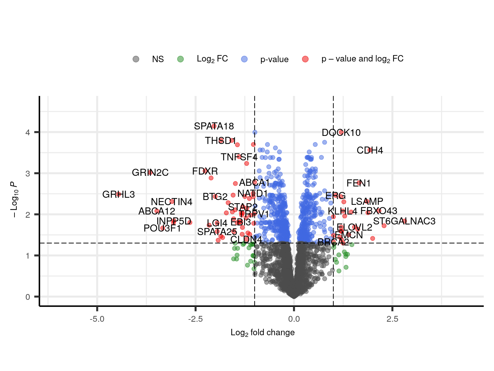
# Calculating FPKM for each gene
metadata_expression <- rpkm(d0, gene.length = "gene_length") %>% t() %>% as.data.frame() %>%
rownames_to_column(var = "Sample_Treatment")
metadata_expression$Sample <- sapply(strsplit(metadata_expression$Sample_Treatment, "_"), `[`, 1)
metadata_expression$Treatment <- sapply(strsplit(metadata_expression$Sample_Treatment, "_"), `[`, 2)
metadata_expression$Treatment <- factor(metadata_expression$Treatment,
levels = c("V", "MMC", "V1", "MMC1", "V2", "MMC2"))
# Expression by group
p1 <- metadata_expression %>%
ggplot(aes(x = Treatment, y = ENSG00000165029, fill = Treatment)) +
geom_boxplot(alpha = 0.5) +
geom_point(position = position_jitter(seed = 1, width = 0.2)) +
ylab("ABCA1 expression (FPKM)") +
xlab("Treatment") +
theme_classic() +
theme(legend.position = "none") +
theme(axis.text.x = element_text(angle = 45, vjust = 1, hjust = 1))
p1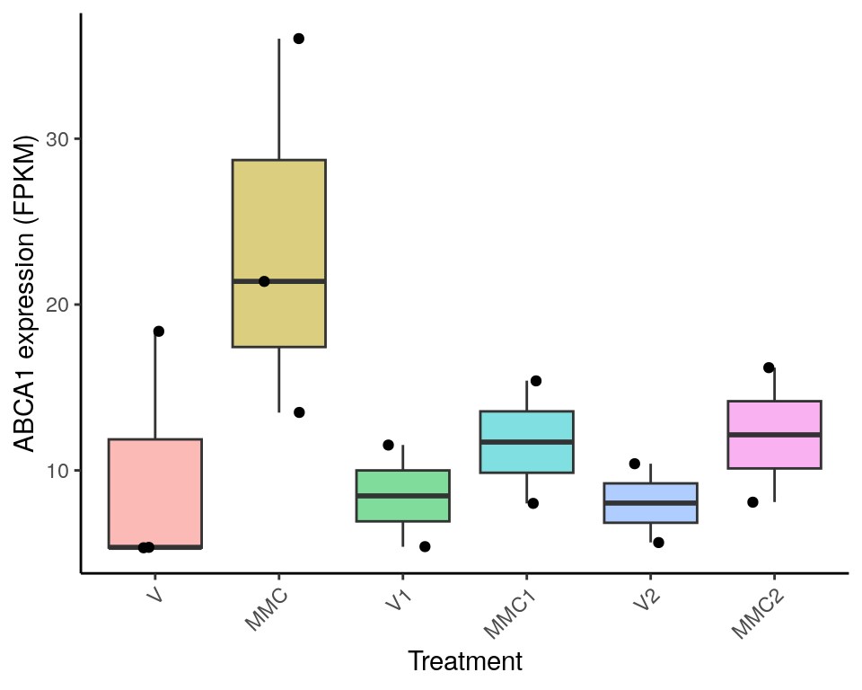
metadata_expression %>%
ggplot(aes(x = Treatment, y = ENSG00000143382, fill = Treatment)) +
geom_boxplot(alpha = 0.5) +
geom_point(position = position_jitter(seed = 1, width = 0.2)) +
ylab("ADAMTSL4 expression (FPKM)") +
xlab("Treatment") +
theme_classic() +
theme(legend.position = "none") +
theme(axis.text.x = element_text(angle = 45, vjust = 1, hjust = 1))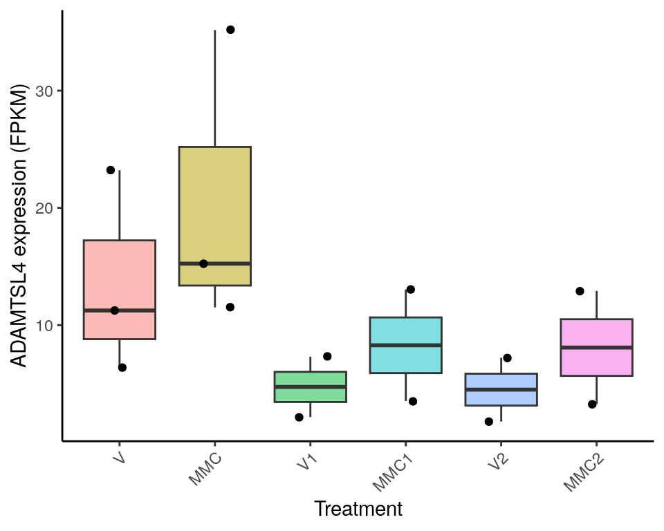
metadata_expression %>%
ggplot(aes(x = Treatment, y = ENSG00000108691, fill = Treatment)) +
geom_boxplot(alpha = 0.5) +
geom_point(position = position_jitter(seed = 1, width = 0.2)) +
ylab("CCL2 expression (FPKM)") +
xlab("Treatment") +
theme_classic() +
theme(legend.position = "none") +
theme(axis.text.x = element_text(angle = 45, vjust = 1, hjust = 1))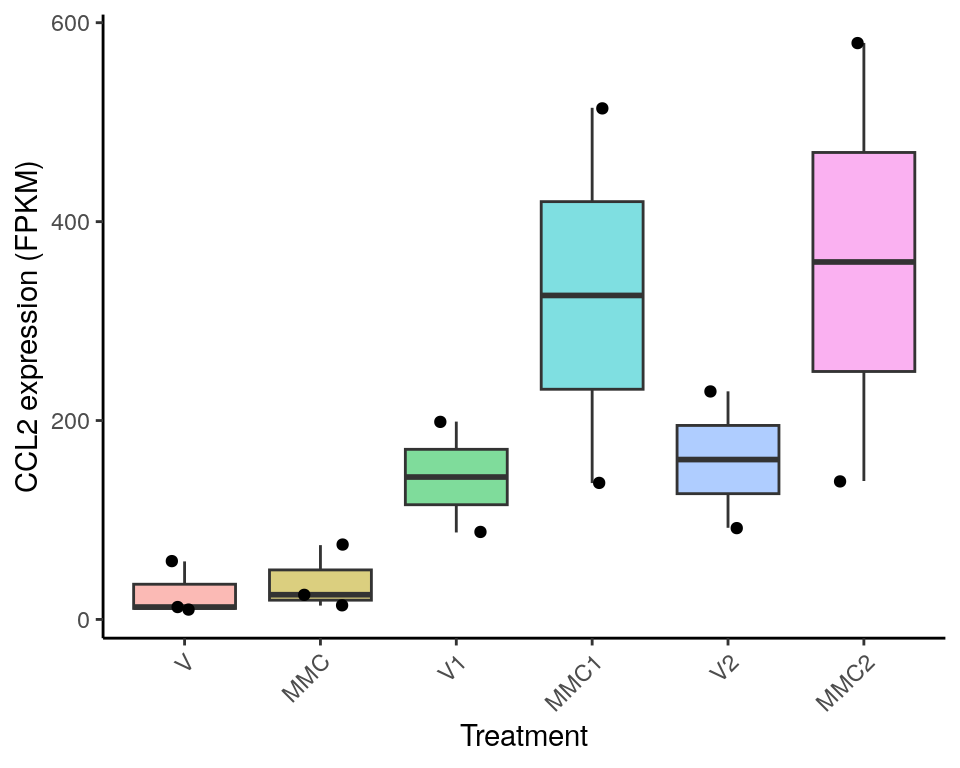
sessionInfo()R version 4.3.0 (2023-04-21)
Platform: x86_64-pc-linux-gnu (64-bit)
Running under: Ubuntu 22.04.3 LTS
Matrix products: default
BLAS: /usr/lib/x86_64-linux-gnu/openblas-pthread/libblas.so.3
LAPACK: /usr/lib/x86_64-linux-gnu/openblas-pthread/libopenblasp-r0.3.20.so; LAPACK version 3.10.0
locale:
[1] LC_CTYPE=en_US.UTF-8 LC_NUMERIC=C
[3] LC_TIME=en_US.UTF-8 LC_COLLATE=en_US.UTF-8
[5] LC_MONETARY=en_US.UTF-8 LC_MESSAGES=en_US.UTF-8
[7] LC_PAPER=en_US.UTF-8 LC_NAME=C
[9] LC_ADDRESS=C LC_TELEPHONE=C
[11] LC_MEASUREMENT=en_US.UTF-8 LC_IDENTIFICATION=C
time zone: Etc/UTC
tzcode source: system (glibc)
attached base packages:
[1] grid stats4 stats graphics grDevices utils datasets
[8] methods base
other attached packages:
[1] ComplexHeatmap_2.18.0 viridis_0.6.3
[3] viridisLite_0.4.2 Seurat_5.0.1
[5] SeuratObject_5.0.2 sp_1.6-1
[7] circlize_0.4.15 RColorBrewer_1.1-3
[9] ggVennDiagram_1.2.2 biomaRt_2.58.2
[11] org.Mm.eg.db_3.18.0 org.Hs.eg.db_3.18.0
[13] AnnotationDbi_1.64.1 IRanges_2.36.0
[15] S4Vectors_0.40.2 Biobase_2.62.0
[17] BiocGenerics_0.48.1 clusterProfiler_4.13.0.004
[19] googlesheets4_1.1.0 survminer_0.4.9
[21] ggpubr_0.6.0 survival_3.5-5
[23] contsurvplot_0.2.0 patchwork_1.1.2
[25] EnhancedVolcano_1.20.0 ggrepel_0.9.3
[27] plyr_1.8.8 edgeR_4.0.16
[29] limma_3.58.1 lubridate_1.9.2
[31] forcats_1.0.0 stringr_1.5.0
[33] dplyr_1.1.2 purrr_1.0.2
[35] readr_2.1.4 tidyr_1.3.0
[37] tibble_3.2.1 ggplot2_3.4.2
[39] tidyverse_2.0.0 workflowr_1.7.1
loaded via a namespace (and not attached):
[1] progress_1.2.2 goftest_1.2-3 Biostrings_2.70.3
[4] vctrs_0.6.5 spatstat.random_3.1-5 proxy_0.4-27
[7] digest_0.6.31 png_0.1-8 shape_1.4.6
[10] git2r_0.32.0 deldir_1.0-9 parallelly_1.36.0
[13] MASS_7.3-60 reshape2_1.4.4 httpuv_1.6.11
[16] foreach_1.5.2 qvalue_2.36.0 withr_2.5.0
[19] xfun_0.39 ggfun_0.2.0 ellipsis_0.3.2
[22] memoise_2.0.1 gson_0.1.0 tidytree_0.4.6
[25] zoo_1.8-12 GlobalOptions_0.1.2 pbapply_1.7-0
[28] prettyunits_1.1.1 KEGGREST_1.42.0 promises_1.2.0.1
[31] httr_1.4.6 rstatix_0.7.2 globals_0.16.2
[34] fitdistrplus_1.1-11 ps_1.7.5 rstudioapi_0.14
[37] units_0.8-2 miniUI_0.1.1.1 generics_0.1.3
[40] DOSE_3.28.2 processx_3.8.1 curl_5.0.1
[43] zlibbioc_1.48.2 ggraph_2.1.0 polyclip_1.10-4
[46] GenomeInfoDbData_1.2.11 xtable_1.8-4 doParallel_1.0.17
[49] evaluate_0.21 BiocFileCache_2.10.2 hms_1.1.3
[52] irlba_2.3.5.1 colorspace_2.1-0 filelock_1.0.2
[55] ROCR_1.0-11 reticulate_1.30 spatstat.data_3.0-1
[58] magrittr_2.0.3 lmtest_0.9-40 later_1.3.1
[61] ggtree_3.10.1 lattice_0.21-8 spatstat.geom_3.2-1
[64] future.apply_1.11.0 getPass_0.2-4 scattermore_1.2
[67] XML_3.99-0.14 shadowtext_0.1.2 cowplot_1.1.1
[70] matrixStats_1.0.0 RcppAnnoy_0.0.20 class_7.3-22
[73] pillar_1.9.0 nlme_3.1-162 iterators_1.0.14
[76] compiler_4.3.0 RSpectra_0.16-1 stringi_1.7.12
[79] sf_1.0-13 tensor_1.5 crayon_1.5.2
[82] abind_1.4-5 gridGraphics_0.5-1 googledrive_2.1.0
[85] locfit_1.5-9.8 graphlayouts_1.0.0 bit_4.0.5
[88] fastmatch_1.1-3 whisker_0.4.1 codetools_0.2-19
[91] bslib_0.5.0 e1071_1.7-13 GetoptLong_1.0.5
[94] plotly_4.10.2 mime_0.12 splines_4.3.0
[97] Rcpp_1.0.10 fastDummies_1.7.3 dbplyr_2.3.2
[100] HDO.db_0.99.1 cellranger_1.1.0 knitr_1.43
[103] blob_1.2.4 utf8_1.2.3 clue_0.3-64
[106] fs_1.6.2 listenv_0.9.0 ggsignif_0.6.4
[109] ggplotify_0.1.0 Matrix_1.6-5 callr_3.7.3
[112] statmod_1.5.0 tzdb_0.4.0 tweenr_2.0.2
[115] pkgconfig_2.0.3 tools_4.3.0 cachem_1.0.8
[118] RSQLite_2.3.1 DBI_1.1.3 fastmap_1.1.1
[121] rmarkdown_2.22 scales_1.2.1 ica_1.0-3
[124] broom_1.0.5 sass_0.4.6 dotCall64_1.0-2
[127] carData_3.0-5 RANN_2.6.1 farver_2.1.1
[130] tidygraph_1.2.3 scatterpie_0.2.1 yaml_2.3.7
[133] cli_3.6.1 leiden_0.4.3 lifecycle_1.0.3
[136] uwot_0.1.14 backports_1.4.1 BiocParallel_1.36.0
[139] timechange_0.2.0 gtable_0.3.3 rjson_0.2.21
[142] ggridges_0.5.4 progressr_0.13.0 parallel_4.3.0
[145] ape_5.7-1 jsonlite_1.8.5 RcppHNSW_0.5.0
[148] bitops_1.0-7 bit64_4.6.0-1 Rtsne_0.16
[151] yulab.utils_0.2.1.002 spatstat.utils_3.0-3 jquerylib_0.1.4
[154] highr_0.10 GOSemSim_2.28.1 survMisc_0.5.6
[157] lazyeval_0.2.2 shiny_1.7.4 htmltools_0.5.5
[160] enrichplot_1.22.0 KMsurv_0.1-5 GO.db_3.18.0
[163] sctransform_0.4.1 rappdirs_0.3.3 glue_1.6.2
[166] spam_2.9-1 XVector_0.42.0 RCurl_1.98-1.12
[169] rprojroot_2.0.3 treeio_1.26.0 classInt_0.4-9
[172] gridExtra_2.3 igraph_1.4.3 R6_2.5.1
[175] km.ci_0.5-6 labeling_0.4.2 cluster_2.1.4
[178] gargle_1.4.0 aplot_0.2.9 GenomeInfoDb_1.38.8
[181] tidyselect_1.2.0 ggforce_0.4.1 xml2_1.3.4
[184] car_3.1-2 future_1.32.0 munsell_0.5.0
[187] KernSmooth_2.23-21 data.table_1.14.8 htmlwidgets_1.6.2
[190] fgsea_1.28.0 rlang_1.1.6 spatstat.sparse_3.0-1
[193] spatstat.explore_3.2-1 fansi_1.0.4 RVenn_1.1.0